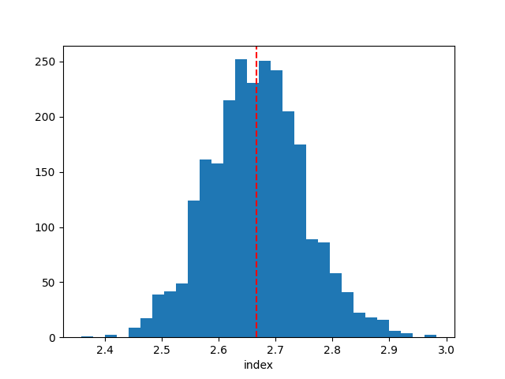
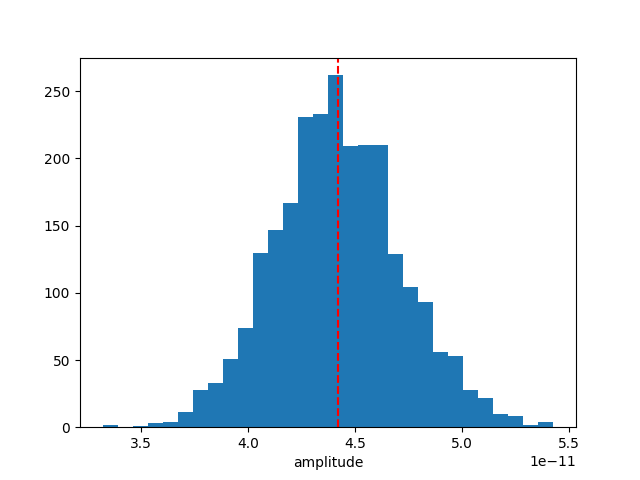

Note
Go to the end to download the full example code or to run this example in your browser via Binder.
Bayesian analysis with nested sampling#
A demonstration of a Bayesian analysis using the nested sampling technique.
Context#
1. Bayesian analysis#
Bayesian inference uses prior knowledge, in the form of a prior distribution, in order to estimate posterior probabilities which we traditionally visualise in the form of corner plots. These distributions contain more information than a maximum likelihood fit as they reveal not only the “best model” but provide a more accurate representation of errors and correlation between parameters. In particular, non-Gaussian degeneracies are complex to estimate with a maximum likelihood approach.
2. Limitations of the Markov Chain Monte Carlo approach#
A well-known approach to estimate this posterior distribution is the Markov Chain Monte Carlo (MCMC). This uses an ensemble of walkers to produce a chain of samples that after a convergence period will reach a stationary state. Once convergence is reached, the successive elements of the chain are samples of the target posterior distribution. However, the weakness of the MCMC approach lies in the “Once convergence” part. If the walkers are started far from the best likelihood region, the convergence time can be long or never reached if the walkers fall in a local minima. The choice of the initialisation point can become critical for complex models with a high number of dimensions and the ability of these walkers to escape a local minimum or to accurately describe a complex likelihood space is not guaranteed.
3. Nested sampling approach#
To overcome these issues, the nested sampling (NS) algorithm has gained traction in physics and astronomy. It is a Monte Carlo algorithm for computing an integral of the likelihood function over the prior model parameter space introduced in Skilling, 2004. The method performs this integral by evolving a collection of points through the parameter space (see recent reviews from Ashton et al., 2022, and Buchner, 2023). Without going into too many details, one important specificity of the NS method is that it starts from the entire parameter space and evolves a collection of live points to map all minima (including multiple modes if any), whereas Markov Chain Monte Carlo methods require an initialisation point and the walkers will explore the local likelihood. The ability of these walkers to escape a local minimum or to accurately describe a complex likelihood space is not guaranteed. This is a fundamental difference with MCMC or Minuit which will only ever probe the vicinity along their minimisation paths and do not have an overview of the global likelihood landscape. The analysis using the NS framework is more CPU time consuming than a standard classical fit, but it provides the full posterior distribution for all parameters, which is out of reach with traditional fitting techniques (N*(N-1)/2 contour plots to generate). In addition, it is more robust to the choice of initialisation, requires less human intervention and is therefore readily integrated in pipeline analysis. In Gammapy, we used the NS implementation of the UltraNest package (see here for more information), one of the leading package in Astronomy (already used in Cosmology and in X-rays). For a nice visualisation of the NS method see here : sampling visualisation. And for a tutorial of UltraNest applied to X-ray fitting with concrete examples and questions see : BXA Tutorial.
Note: please cite UltraNest if used for a paper
If you are using the “UltraNest” library for a paper, please follow its citation scheme: Cite UltraNest.
Proposed approach#
In this example, we will perform a Bayesian analysis with multiple 1D spectra of the Crab nebula data and investigate their posterior distributions.
Setup#
As usual, we’ll start with some setup …
import matplotlib.pyplot as plt
import numpy as np
import astropy.units as u
from gammapy.datasets import Datasets
from gammapy.datasets import SpectrumDatasetOnOff
from gammapy.modeling.models import (
SkyModel,
UniformPrior,
LogUniformPrior,
)
from gammapy.modeling.sampler import Sampler
Loading the spectral datasets#
Here we will load a few Crab 1D spectral data for which we will do a fit.
path = "$GAMMAPY_DATA/joint-crab/spectra/hess/"
datasets = Datasets()
for id in ["23526", "23559", "23592"]:
dataset = SpectrumDatasetOnOff.read(f"{path}pha_obs{id}.fits")
datasets.append(dataset)
Model definition#
Now we want to define the spectral model that will be fitted to the data. The Crab spectra will be fitted here with a simple powerlaw for simplicity.
model = SkyModel.create(spectral_model="pl", name="crab")
Warning
Priors definition: Unlike a traditional fit where priors on the parameters are optional, here it is inherent to the Bayesian approach and are therefore mandatory.
In this case we will set (min,max) prior that will define the
boundaries in which the sampling will be performed.
Note that it is usually recommended to use a LogUniformPrior for
the parameters that have a large amplitude range like the
amplitude parameter.
A UniformPrior means that the samples will be drawn with uniform
probability between the (min,max) values in the linear or log space
in the case of a LogUniformPrior.
model.spectral_model.amplitude.prior = LogUniformPrior(min=1e-12, max=1e-10)
model.spectral_model.index.prior = UniformPrior(min=1, max=5)
datasets.models = [model]
print(datasets.models)
DatasetModels
Component 0: SkyModel
Name : crab
Datasets names : None
Spectral model type : PowerLawSpectralModel
Spatial model type :
Temporal model type :
Parameters:
index : 2.000 +/- 0.00
amplitude : 1.00e-12 +/- 0.0e+00 1 / (TeV s cm2)
reference (frozen): 1.000 TeV
Defining the sampler and options#
As for the Fit object, the Sampler object can receive
different backend (although just one is available for now).
The Sampler comes with “reasonable” default parameters, but you can
change them via the sampler_opts dictionary.
Here is a short description of the most relevant parameters that you
could change :
live_points: minimum number of live points throughout the run. More points allow to discover multiple peaks if existing, but is slower. To test the Prior boundaries and for debugging, a lower number (~100) can be used before a production run with more points (~400 or more).frac_remain: the cut-off condition for the integration, set by the maximum allowed fraction of posterior mass left in the live points vs the dead points. High values (e.g., 0.5) are faster and can be used if the posterior distribution is a relatively simple shape. A low value (1e-1, 1e-2) is optimal for finding peaks, but slower.log_dir: directory where the output files will be stored. If set to None, no files will be written. If set to a string, a directory will be created containing the ongoing status of the run and final results. For time consuming analysis, it is highly recommended to use that option to monitor the run and restart it in case of a crash (withresume=True).
Important note: unlike the MCMC method, you don’t need to define the number of steps for which the sampler will run. The algorithm will automatically stop once a convergence criteria has been reached.
sampler_opts = {
"live_points": 300,
"frac_remain": 0.3,
"log_dir": None,
}
sampler = Sampler(backend="ultranest", sampler_opts=sampler_opts)
Next we can run the sampler on a given dataset. No options are accepted in the run method.
[ultranest] Sampling 300 live points from prior ...
Mono-modal Volume: ~exp(-3.93) * Expected Volume: exp(0.00) Quality: ok
index : +1.0|************************************************| +5.0
amplitude: +1.0e-12|********************************* ******** ****| +1.0e-10
Z=-inf(0.00%) | Like=-4008.80..-59.78 [-4008.8002..-327.6915] | it/evals=0/301 eff=0.0000% N=300
Z=-549.3(0.00%) | Like=-543.78..-59.78 [-4008.8002..-327.6915] | it/evals=21/324 eff=87.5000% N=300
Z=-542.1(0.00%) | Like=-536.37..-59.78 [-4008.8002..-327.6915] | it/evals=30/333 eff=90.9091% N=300
Z=-518.7(0.00%) | Like=-512.05..-59.78 [-4008.8002..-327.6915] | it/evals=52/355 eff=94.5455% N=300
Z=-508.6(0.00%) | Like=-501.30..-59.78 [-4008.8002..-327.6915] | it/evals=60/365 eff=92.3077% N=300
Mono-modal Volume: ~exp(-3.93) Expected Volume: exp(-0.22) Quality: ok
index : +1.0|************************************************| +5.0
amplitude: +1.0e-12|********************************* ***** ** *****| +1.0e-10
Z=-474.5(0.00%) | Like=-468.28..-59.78 [-4008.8002..-327.6915] | it/evals=77/385 eff=90.5882% N=300
Z=-465.9(0.00%) | Like=-459.81..-59.78 [-4008.8002..-327.6915] | it/evals=90/400 eff=90.0000% N=300
Z=-435.5(0.00%) | Like=-429.43..-59.78 [-4008.8002..-327.6915] | it/evals=112/422 eff=91.8033% N=300
Z=-429.4(0.00%) | Like=-422.76..-59.78 [-4008.8002..-327.6915] | it/evals=120/434 eff=89.5522% N=300
Mono-modal Volume: ~exp(-4.75) * Expected Volume: exp(-0.45) Quality: ok
index : +1.0|************************************************| +5.0
amplitude: +1.0e-12|*************************************** ** *****| +1.0e-10
Z=-399.9(0.00%) | Like=-393.54..-59.78 [-4008.8002..-327.6915] | it/evals=134/452 eff=88.1579% N=300
Z=-388.9(0.00%) | Like=-380.19..-59.78 [-4008.8002..-327.6915] | it/evals=150/468 eff=89.2857% N=300
Z=-365.1(0.00%) | Like=-357.21..-59.78 [-4008.8002..-327.6915] | it/evals=167/489 eff=88.3598% N=300
Z=-351.9(0.00%) | Like=-343.36..-59.78 [-4008.8002..-327.6915] | it/evals=180/511 eff=85.3081% N=300
Z=-340.1(0.00%) | Like=-333.57..-59.78 [-4008.8002..-327.6915] | it/evals=197/533 eff=84.5494% N=300
Mono-modal Volume: ~exp(-4.75) Expected Volume: exp(-0.67) Quality: ok
index : +1.0| *********************************************| +5.0
amplitude: +1.0e-12| ***************************************** *****| +1.0e-10
Z=-329.5(0.00%) | Like=-323.69..-59.78 [-327.3222..-174.4281] | it/evals=210/551 eff=83.6653% N=300
Z=-301.0(0.00%) | Like=-294.64..-59.78 [-327.3222..-174.4281] | it/evals=227/575 eff=82.5455% N=300
Z=-289.4(0.00%) | Like=-283.42..-59.78 [-327.3222..-174.4281] | it/evals=240/595 eff=81.3559% N=300
Z=-280.8(0.00%) | Like=-273.84..-59.78 [-327.3222..-174.4281] | it/evals=256/616 eff=81.0127% N=300
Mono-modal Volume: ~exp(-4.95) * Expected Volume: exp(-0.89) Quality: ok
index : +1.0| *******************************************| +5.0
amplitude: +1.0e-12| *********************************** **********| +1.0e-10
Z=-266.4(0.00%) | Like=-257.76..-59.58 [-327.3222..-174.4281] | it/evals=268/629 eff=81.4590% N=300
Z=-263.3(0.00%) | Like=-257.06..-59.58 [-327.3222..-174.4281] | it/evals=270/631 eff=81.5710% N=300
Z=-249.3(0.00%) | Like=-242.62..-59.58 [-327.3222..-174.4281] | it/evals=286/653 eff=81.0198% N=300
Z=-239.6(0.00%) | Like=-233.33..-59.58 [-327.3222..-174.4281] | it/evals=300/671 eff=80.8625% N=300
Z=-233.2(0.00%) | Like=-227.31..-59.58 [-327.3222..-174.4281] | it/evals=313/693 eff=79.6438% N=300
Z=-223.3(0.00%) | Like=-216.67..-59.58 [-327.3222..-174.4281] | it/evals=330/713 eff=79.9031% N=300
Mono-modal Volume: ~exp(-5.18) * Expected Volume: exp(-1.12) Quality: ok
index : +1.0| ******************************************| +5.0
amplitude: +1.0e-12| ********************************************| +1.0e-10
Z=-220.5(0.00%) | Like=-214.71..-59.58 [-327.3222..-174.4281] | it/evals=335/722 eff=79.3839% N=300
Z=-212.3(0.00%) | Like=-206.09..-59.54 [-327.3222..-174.4281] | it/evals=352/746 eff=78.9238% N=300
Z=-208.5(0.00%) | Like=-201.38..-59.54 [-327.3222..-174.4281] | it/evals=360/755 eff=79.1209% N=300
Z=-200.6(0.00%) | Like=-192.12..-59.54 [-327.3222..-174.4281] | it/evals=379/777 eff=79.4549% N=300
Z=-193.8(0.00%) | Like=-186.87..-59.54 [-327.3222..-174.4281] | it/evals=390/793 eff=79.1075% N=300
Mono-modal Volume: ~exp(-5.18) Expected Volume: exp(-1.34) Quality: ok
index : +1.0| *************************************** | +5.0
amplitude: +1.0e-12| **************************************** *| +1.0e-10
Z=-187.7(0.00%) | Like=-181.73..-59.54 [-327.3222..-174.4281] | it/evals=407/813 eff=79.3372% N=300
Z=-182.8(0.00%) | Like=-176.40..-59.54 [-327.3222..-174.4281] | it/evals=420/832 eff=78.9474% N=300
Z=-176.6(0.00%) | Like=-168.77..-59.54 [-174.3670..-118.1328] | it/evals=434/855 eff=78.1982% N=300
Z=-169.3(0.00%) | Like=-163.40..-59.54 [-174.3670..-118.1328] | it/evals=450/874 eff=78.3972% N=300
Z=-164.0(0.00%) | Like=-158.03..-59.54 [-174.3670..-118.1328] | it/evals=464/896 eff=77.8523% N=300
Mono-modal Volume: ~exp(-5.91) * Expected Volume: exp(-1.56) Quality: ok
index : +1.0| ********************************** | +5.0
amplitude: +1.0e-12| ************************************* * | +1.0e-10
Z=-163.0(0.00%) | Like=-157.16..-59.54 [-174.3670..-118.1328] | it/evals=469/904 eff=77.6490% N=300
Z=-160.2(0.00%) | Like=-153.80..-59.54 [-174.3670..-118.1328] | it/evals=480/916 eff=77.9221% N=300
Z=-154.7(0.00%) | Like=-148.54..-59.54 [-174.3670..-118.1328] | it/evals=498/938 eff=78.0564% N=300
Z=-151.4(0.00%) | Like=-145.33..-59.44 [-174.3670..-118.1328] | it/evals=510/956 eff=77.7439% N=300
Z=-146.6(0.00%) | Like=-140.98..-59.44 [-174.3670..-118.1328] | it/evals=529/978 eff=78.0236% N=300
Mono-modal Volume: ~exp(-5.91) Expected Volume: exp(-1.79) Quality: ok
index : +1.0| ****************************** | +5.0
amplitude: +1.0e-12| ************************************ | +1.0e-10
Z=-144.9(0.00%) | Like=-139.23..-59.44 [-174.3670..-118.1328] | it/evals=540/996 eff=77.5862% N=300
Z=-142.3(0.00%) | Like=-136.30..-59.44 [-174.3670..-118.1328] | it/evals=552/1020 eff=76.6667% N=300
Z=-138.4(0.00%) | Like=-132.42..-59.44 [-174.3670..-118.1328] | it/evals=570/1042 eff=76.8194% N=300
Z=-134.3(0.00%) | Like=-127.94..-59.44 [-174.3670..-118.1328] | it/evals=586/1064 eff=76.7016% N=300
Z=-131.8(0.00%) | Like=-125.66..-59.44 [-174.3670..-118.1328] | it/evals=598/1089 eff=75.7921% N=300
Z=-131.4(0.00%) | Like=-125.44..-59.44 [-174.3670..-118.1328] | it/evals=600/1091 eff=75.8534% N=300
Mono-modal Volume: ~exp(-6.40) * Expected Volume: exp(-2.01) Quality: ok
index : +1.0| ************************* +3.9 | +5.0
amplitude: +1.0e-12| ********************************** | +1.0e-10
Z=-131.0(0.00%) | Like=-124.85..-59.44 [-174.3670..-118.1328] | it/evals=603/1096 eff=75.7538% N=300
Z=-128.5(0.00%) | Like=-122.21..-59.44 [-174.3670..-118.1328] | it/evals=616/1120 eff=75.1220% N=300
Z=-125.5(0.00%) | Like=-119.71..-59.44 [-174.3670..-118.1328] | it/evals=630/1139 eff=75.0894% N=300
Z=-122.2(0.00%) | Like=-115.43..-59.44 [-117.8778..-88.1448] | it/evals=648/1161 eff=75.2613% N=300
Z=-119.8(0.00%) | Like=-113.71..-59.44 [-117.8778..-88.1448] | it/evals=660/1176 eff=75.3425% N=300
Mono-modal Volume: ~exp(-6.40) Expected Volume: exp(-2.23) Quality: ok
index : +1.0| +1.9 *********************** +3.8 | +5.0
amplitude: +1.0e-12| ******************************* | +1.0e-10
Z=-117.2(0.00%) | Like=-111.18..-59.44 [-117.8778..-88.1448] | it/evals=675/1197 eff=75.2508% N=300
Z=-115.0(0.00%) | Like=-108.48..-59.44 [-117.8778..-88.1448] | it/evals=690/1221 eff=74.9186% N=300
Z=-112.0(0.00%) | Like=-105.43..-59.13 [-117.8778..-88.1448] | it/evals=706/1243 eff=74.8674% N=300
Z=-109.6(0.00%) | Like=-103.47..-58.77 [-117.8778..-88.1448] | it/evals=720/1266 eff=74.5342% N=300
Z=-108.1(0.00%) | Like=-102.28..-58.77 [-117.8778..-88.1448] | it/evals=733/1288 eff=74.1903% N=300
Mono-modal Volume: ~exp(-6.67) * Expected Volume: exp(-2.46) Quality: ok
index : +1.0| +2.0 ******************** +3.6 | +5.0
amplitude: +1.0e-12| **************************** +7.8e-11| +1.0e-10
Z=-107.7(0.00%) | Like=-101.70..-58.77 [-117.8778..-88.1448] | it/evals=737/1293 eff=74.2195% N=300
Z=-106.3(0.00%) | Like=-99.90..-58.77 [-117.8778..-88.1448] | it/evals=750/1311 eff=74.1840% N=300
Z=-104.0(0.00%) | Like=-98.10..-58.77 [-117.8778..-88.1448] | it/evals=767/1333 eff=74.2498% N=300
Z=-102.7(0.00%) | Like=-96.78..-58.77 [-117.8778..-88.1448] | it/evals=780/1350 eff=74.2857% N=300
Z=-101.1(0.00%) | Like=-95.00..-58.77 [-117.8778..-88.1448] | it/evals=796/1373 eff=74.1845% N=300
Mono-modal Volume: ~exp(-6.99) * Expected Volume: exp(-2.68) Quality: ok
index : +1.0| +2.1 ****************** +3.5 | +5.0
amplitude: +1.0e-12| ************************** +7.4e-11 | +1.0e-10
Z=-100.3(0.00%) | Like=-94.03..-58.77 [-117.8778..-88.1448] | it/evals=804/1386 eff=74.0331% N=300
Z=-99.7(0.00%) | Like=-93.45..-58.77 [-117.8778..-88.1448] | it/evals=810/1393 eff=74.1080% N=300
Z=-97.8(0.00%) | Like=-91.79..-58.77 [-117.8778..-88.1448] | it/evals=827/1415 eff=74.1704% N=300
Z=-96.5(0.00%) | Like=-90.36..-58.77 [-117.8778..-88.1448] | it/evals=840/1441 eff=73.6196% N=300
Z=-95.5(0.00%) | Like=-89.51..-58.77 [-117.8778..-88.1448] | it/evals=853/1464 eff=73.2818% N=300
Z=-94.5(0.00%) | Like=-88.33..-58.77 [-117.8778..-88.1448] | it/evals=867/1488 eff=72.9798% N=300
Z=-94.2(0.00%) | Like=-88.13..-58.77 [-88.1319..-74.2914] | it/evals=870/1492 eff=72.9866% N=300
Mono-modal Volume: ~exp(-7.00) * Expected Volume: exp(-2.90) Quality: ok
index : +1.0| +2.1 **************** +3.4 | +5.0
amplitude: +1.0e-12| +2.5e-11 *********************** +7.0e-11 | +1.0e-10
Z=-94.2(0.00%) | Like=-87.99..-58.77 [-88.1319..-74.2914] | it/evals=871/1493 eff=73.0092% N=300
Z=-92.7(0.00%) | Like=-86.29..-58.77 [-88.1319..-74.2914] | it/evals=886/1517 eff=72.8020% N=300
Z=-91.4(0.00%) | Like=-85.39..-58.77 [-88.1319..-74.2914] | it/evals=900/1535 eff=72.8745% N=300
Z=-90.0(0.00%) | Like=-83.45..-58.77 [-88.1319..-74.2914] | it/evals=916/1558 eff=72.8140% N=300
Z=-88.8(0.00%) | Like=-82.80..-58.77 [-88.1319..-74.2914] | it/evals=930/1577 eff=72.8269% N=300
Mono-modal Volume: ~exp(-7.15) * Expected Volume: exp(-3.13) Quality: ok
index : +1.0| +2.2 *************** +3.3 | +5.0
amplitude: +1.0e-12| +2.7e-11 ******************** +6.7e-11 | +1.0e-10
Z=-88.3(0.00%) | Like=-82.24..-58.77 [-88.1319..-74.2914] | it/evals=938/1585 eff=72.9961% N=300
Z=-87.3(0.00%) | Like=-80.91..-58.77 [-88.1319..-74.2914] | it/evals=953/1607 eff=72.9151% N=300
Z=-86.8(0.00%) | Like=-80.56..-58.77 [-88.1319..-74.2914] | it/evals=960/1617 eff=72.8929% N=300
Z=-85.7(0.00%) | Like=-79.63..-58.77 [-88.1319..-74.2914] | it/evals=979/1640 eff=73.0597% N=300
Z=-85.1(0.00%) | Like=-78.93..-58.76 [-88.1319..-74.2914] | it/evals=990/1654 eff=73.1167% N=300
Z=-84.4(0.00%) | Like=-78.56..-58.76 [-88.1319..-74.2914] | it/evals=1004/1677 eff=72.9121% N=300
Mono-modal Volume: ~exp(-7.46) * Expected Volume: exp(-3.35) Quality: ok
index : +1.0| +2.2 ************* +3.2 | +5.0
amplitude: +1.0e-12| +2.8e-11 ******************* +6.6e-11 | +1.0e-10
Z=-84.4(0.00%) | Like=-78.54..-58.76 [-88.1319..-74.2914] | it/evals=1005/1678 eff=72.9318% N=300
Z=-83.8(0.00%) | Like=-77.66..-58.76 [-88.1319..-74.2914] | it/evals=1020/1697 eff=73.0136% N=300
Z=-82.9(0.00%) | Like=-76.62..-58.76 [-88.1319..-74.2914] | it/evals=1037/1719 eff=73.0796% N=300
Z=-82.0(0.00%) | Like=-75.46..-58.76 [-88.1319..-74.2914] | it/evals=1050/1733 eff=73.2729% N=300
Z=-80.8(0.00%) | Like=-74.17..-58.76 [-74.2172..-66.8954] | it/evals=1067/1755 eff=73.3333% N=300
Mono-modal Volume: ~exp(-7.55) * Expected Volume: exp(-3.57) Quality: ok
index : +1.0| +2.3 ************ +3.2 | +5.0
amplitude: +1.0e-12| +3.0e-11 ***************** +6.2e-11 | +1.0e-10
Z=-80.5(0.00%) | Like=-73.81..-58.76 [-74.2172..-66.8954] | it/evals=1072/1760 eff=73.4247% N=300
Z=-80.0(0.00%) | Like=-73.51..-58.76 [-74.2172..-66.8954] | it/evals=1080/1770 eff=73.4694% N=300
Z=-79.4(0.00%) | Like=-73.02..-58.76 [-74.2172..-66.8954] | it/evals=1091/1793 eff=73.0743% N=300
Z=-78.8(0.00%) | Like=-72.33..-58.76 [-74.2172..-66.8954] | it/evals=1103/1816 eff=72.7573% N=300
Z=-78.4(0.00%) | Like=-72.03..-58.76 [-74.2172..-66.8954] | it/evals=1110/1824 eff=72.8346% N=300
Z=-77.7(0.00%) | Like=-71.30..-58.76 [-74.2172..-66.8954] | it/evals=1125/1846 eff=72.7684% N=300
Mono-modal Volume: ~exp(-8.28) * Expected Volume: exp(-3.80) Quality: ok
index : +1.0| +2.3 *********** +3.1 | +5.0
amplitude: +1.0e-12| +3.2e-11 *************** +6.1e-11 | +1.0e-10
Z=-77.2(0.00%) | Like=-70.90..-58.76 [-74.2172..-66.8954] | it/evals=1139/1868 eff=72.6403% N=300
Z=-77.1(0.00%) | Like=-70.88..-58.76 [-74.2172..-66.8954] | it/evals=1140/1869 eff=72.6577% N=300
Z=-76.5(0.00%) | Like=-70.10..-58.76 [-74.2172..-66.8954] | it/evals=1158/1894 eff=72.6474% N=300
Z=-76.0(0.00%) | Like=-69.76..-58.76 [-74.2172..-66.8954] | it/evals=1170/1912 eff=72.5806% N=300
Z=-75.5(0.00%) | Like=-69.16..-58.76 [-74.2172..-66.8954] | it/evals=1188/1934 eff=72.7050% N=300
Z=-75.1(0.00%) | Like=-68.88..-58.76 [-74.2172..-66.8954] | it/evals=1200/1953 eff=72.5953% N=300
Mono-modal Volume: ~exp(-8.28) Expected Volume: exp(-4.02) Quality: ok
index : +1.0| +2.3 ********* +3.1 | +5.0
amplitude: +1.0e-12| +3.2e-11 ************** +5.9e-11 | +1.0e-10
Z=-74.6(0.01%) | Like=-68.45..-58.76 [-74.2172..-66.8954] | it/evals=1216/1973 eff=72.6838% N=300
Z=-74.2(0.01%) | Like=-68.04..-58.76 [-74.2172..-66.8954] | it/evals=1230/1990 eff=72.7811% N=300
Z=-73.8(0.01%) | Like=-67.53..-58.76 [-74.2172..-66.8954] | it/evals=1247/2013 eff=72.7963% N=300
Z=-73.4(0.02%) | Like=-67.17..-58.76 [-74.2172..-66.8954] | it/evals=1260/2029 eff=72.8745% N=300
Z=-73.1(0.03%) | Like=-66.75..-58.76 [-66.8873..-65.2086] | it/evals=1272/2052 eff=72.6027% N=300
Mono-modal Volume: ~exp(-8.35) * Expected Volume: exp(-4.24) Quality: ok
index : +1.0| +2.4 ********* +3.0 | +5.0
amplitude: +1.0e-12| +3.4e-11 ************* +5.7e-11 | +1.0e-10
Z=-73.1(0.03%) | Like=-66.74..-58.76 [-66.8873..-65.2086] | it/evals=1273/2053 eff=72.6184% N=300
Z=-72.7(0.04%) | Like=-66.34..-58.76 [-66.8873..-65.2086] | it/evals=1290/2075 eff=72.6761% N=300
Z=-72.2(0.07%) | Like=-65.88..-58.76 [-66.8873..-65.2086] | it/evals=1309/2097 eff=72.8436% N=300
Z=-71.9(0.09%) | Like=-65.50..-58.76 [-66.8873..-65.2086] | it/evals=1320/2110 eff=72.9282% N=300
Z=-71.5(0.15%) | Like=-65.07..-58.76 [-65.2036..-65.0499] | it/evals=1337/2132 eff=72.9803% N=300
Mono-modal Volume: ~exp(-8.44) * Expected Volume: exp(-4.47) Quality: ok
index : +1.0| +2.4 ******** +3.0 | +5.0
amplitude: +1.0e-12| +3.4e-11 *********** +5.6e-11 | +1.0e-10
Z=-71.4(0.16%) | Like=-65.01..-58.76 [-65.0281..-65.0090] | it/evals=1340/2137 eff=72.9450% N=300
Z=-71.2(0.20%) | Like=-64.91..-58.76 [-64.9139..-64.9092]*| it/evals=1350/2148 eff=73.0519% N=300
Z=-70.9(0.27%) | Like=-64.64..-58.76 [-64.6979..-64.6432] | it/evals=1367/2171 eff=73.0625% N=300
Z=-70.7(0.35%) | Like=-64.42..-58.76 [-64.4175..-64.4066] | it/evals=1380/2189 eff=73.0545% N=300
Z=-70.4(0.47%) | Like=-64.15..-58.76 [-64.1520..-64.1400] | it/evals=1396/2211 eff=73.0508% N=300
Mono-modal Volume: ~exp(-8.74) * Expected Volume: exp(-4.69) Quality: ok
index : +1.0| +2.4 ******** +3.0 | +5.0
amplitude: +1.0e-12| +3.5e-11 ********** +5.4e-11 | +1.0e-10
Z=-70.2(0.56%) | Like=-63.94..-58.76 [-63.9384..-63.9364]*| it/evals=1407/2230 eff=72.9016% N=300
Z=-70.2(0.59%) | Like=-63.91..-58.76 [-63.9136..-63.9000] | it/evals=1410/2235 eff=72.8682% N=300
Z=-69.9(0.76%) | Like=-63.61..-58.76 [-63.6118..-63.5876] | it/evals=1428/2257 eff=72.9688% N=300
Z=-69.7(0.92%) | Like=-63.52..-58.76 [-63.5196..-63.5191]*| it/evals=1440/2272 eff=73.0223% N=300
Z=-69.5(1.16%) | Like=-63.33..-58.76 [-63.3339..-63.3182] | it/evals=1458/2297 eff=73.0095% N=300
Z=-69.3(1.37%) | Like=-63.08..-58.76 [-63.0767..-63.0753]*| it/evals=1470/2312 eff=73.0616% N=300
Mono-modal Volume: ~exp(-8.90) * Expected Volume: exp(-4.91) Quality: ok
index : +1.0| +2.4 ******* +2.9 | +5.0
amplitude: +1.0e-12| +3.6e-11 ********* +5.3e-11 | +1.0e-10
Z=-69.3(1.45%) | Like=-63.00..-58.76 [-63.0269..-63.0029] | it/evals=1474/2316 eff=73.1151% N=300
Z=-69.0(1.83%) | Like=-62.71..-58.75 [-62.7106..-62.7061]*| it/evals=1494/2339 eff=73.2712% N=300
Z=-68.9(1.98%) | Like=-62.62..-58.75 [-62.6355..-62.6177] | it/evals=1500/2345 eff=73.3496% N=300
Z=-68.8(2.43%) | Like=-62.50..-58.75 [-62.5188..-62.5048] | it/evals=1517/2368 eff=73.3559% N=300
Z=-68.6(2.84%) | Like=-62.28..-58.75 [-62.3058..-62.2779] | it/evals=1530/2391 eff=73.1707% N=300
Mono-modal Volume: ~exp(-9.12) * Expected Volume: exp(-5.14) Quality: ok
index : +1.0| +2.5 ****** +2.9 | +5.0
amplitude: +1.0e-12| +3.7e-11 ********* +5.3e-11 | +1.0e-10
Z=-68.5(3.22%) | Like=-62.20..-58.75 [-62.2003..-62.1559] | it/evals=1541/2407 eff=73.1372% N=300
Z=-68.3(3.96%) | Like=-61.94..-58.75 [-61.9447..-61.9355]*| it/evals=1560/2427 eff=73.3427% N=300
Z=-68.1(4.70%) | Like=-61.80..-58.75 [-61.8124..-61.7954] | it/evals=1578/2450 eff=73.3953% N=300
Z=-68.0(5.26%) | Like=-61.72..-58.75 [-61.7160..-61.7158]*| it/evals=1590/2471 eff=73.2381% N=300
Z=-67.9(5.87%) | Like=-61.61..-58.75 [-61.6275..-61.6123] | it/evals=1603/2494 eff=73.0629% N=300
Mono-modal Volume: ~exp(-9.29) * Expected Volume: exp(-5.36) Quality: ok
index : +1.0| +2.5 ****** +2.9 | +5.0
amplitude: +1.0e-12| +3.8e-11 ******** +5.2e-11 | +1.0e-10
Z=-67.8(6.12%) | Like=-61.57..-58.75 [-61.5658..-61.5319] | it/evals=1608/2500 eff=73.0909% N=300
Z=-67.7(6.80%) | Like=-61.43..-58.75 [-61.4264..-61.4259]*| it/evals=1620/2516 eff=73.1047% N=300
Z=-67.6(8.04%) | Like=-61.25..-58.75 [-61.2467..-61.2393]*| it/evals=1640/2539 eff=73.2470% N=300
Z=-67.5(8.64%) | Like=-61.17..-58.75 [-61.1731..-61.1644]*| it/evals=1650/2552 eff=73.2682% N=300
Z=-67.4(9.90%) | Like=-60.95..-58.75 [-60.9478..-60.9437]*| it/evals=1668/2575 eff=73.3187% N=300
Mono-modal Volume: ~exp(-9.42) * Expected Volume: exp(-5.58) Quality: ok
index : +1.0| +2.5 ****** +2.8 | +5.0
amplitude: +1.0e-12| +3.8e-11 ******* +5.1e-11 | +1.0e-10
Z=-67.3(10.44%) | Like=-60.91..-58.75 [-60.9132..-60.8880] | it/evals=1675/2584 eff=73.3363% N=300
Z=-67.3(10.77%) | Like=-60.86..-58.75 [-60.8597..-60.8590]*| it/evals=1680/2590 eff=73.3624% N=300
Z=-67.1(12.40%) | Like=-60.76..-58.75 [-60.7591..-60.7550]*| it/evals=1700/2612 eff=73.5294% N=300
Z=-67.1(13.34%) | Like=-60.71..-58.75 [-60.7093..-60.7036]*| it/evals=1710/2626 eff=73.5168% N=300
Z=-67.0(15.21%) | Like=-60.61..-58.75 [-60.6200..-60.6077] | it/evals=1729/2649 eff=73.6058% N=300
Z=-66.9(16.31%) | Like=-60.52..-58.75 [-60.5454..-60.5227] | it/evals=1740/2664 eff=73.6041% N=300
Mono-modal Volume: ~exp(-9.56) * Expected Volume: exp(-5.81) Quality: ok
index : +1.0| +2.5 **** +2.8 | +5.0
amplitude: +1.0e-12| +3.9e-11 ****** +5.0e-11 | +1.0e-10
Z=-66.9(16.56%) | Like=-60.51..-58.75 [-60.5112..-60.5044]*| it/evals=1742/2667 eff=73.5953% N=300
Z=-66.8(18.15%) | Like=-60.42..-58.75 [-60.4164..-60.3870] | it/evals=1758/2690 eff=73.5565% N=300
Z=-66.7(19.46%) | Like=-60.32..-58.75 [-60.3250..-60.3238]*| it/evals=1770/2711 eff=73.4135% N=300
Z=-66.6(21.02%) | Like=-60.21..-58.75 [-60.2078..-60.2039]*| it/evals=1784/2735 eff=73.2649% N=300
Z=-66.6(22.89%) | Like=-60.14..-58.75 [-60.1358..-60.1305]*| it/evals=1800/2756 eff=73.2899% N=300
Mono-modal Volume: ~exp(-9.83) * Expected Volume: exp(-6.03) Quality: ok
index : +1.0| +2.5 **** +2.8 | +5.0
amplitude: +1.0e-12| +4.0e-11 ****** +4.9e-11 | +1.0e-10
Z=-66.5(23.97%) | Like=-60.07..-58.75 [-60.0723..-60.0637]*| it/evals=1809/2768 eff=73.2982% N=300
Z=-66.4(25.92%) | Like=-59.97..-58.75 [-59.9722..-59.9686]*| it/evals=1826/2793 eff=73.2451% N=300
Z=-66.4(26.39%) | Like=-59.95..-58.75 [-59.9500..-59.9481]*| it/evals=1830/2803 eff=73.1123% N=300
Z=-66.3(28.42%) | Like=-59.87..-58.75 [-59.8702..-59.8603]*| it/evals=1846/2826 eff=73.0800% N=300
Z=-66.3(30.28%) | Like=-59.83..-58.75 [-59.8269..-59.8201]*| it/evals=1860/2847 eff=73.0271% N=300
Mono-modal Volume: ~exp(-10.71) * Expected Volume: exp(-6.25) Quality: ok
index : +1.0| +2.6 **** +2.8 | +5.0
amplitude: +1.0e-12| +4.0e-11 ****** +4.9e-11 | +1.0e-10
Z=-66.2(32.33%) | Like=-59.79..-58.75 [-59.7883..-59.7877]*| it/evals=1876/2868 eff=73.0530% N=300
Z=-66.2(33.93%) | Like=-59.74..-58.75 [-59.7403..-59.7304]*| it/evals=1890/2884 eff=73.1424% N=300
Z=-66.1(36.28%) | Like=-59.69..-58.75 [-59.6885..-59.6880]*| it/evals=1908/2907 eff=73.1876% N=300
Z=-66.0(37.81%) | Like=-59.66..-58.75 [-59.6593..-59.6583]*| it/evals=1920/2919 eff=73.3104% N=300
Z=-66.0(40.07%) | Like=-59.59..-58.75 [-59.5930..-59.5878]*| it/evals=1939/2942 eff=73.3914% N=300
Mono-modal Volume: ~exp(-10.71) Expected Volume: exp(-6.48) Quality: ok
index : +1.0| +2.6 **** +2.8 | +5.0
amplitude: +1.0e-12| +4.1e-11 **** +4.8e-11 | +1.0e-10
Z=-66.0(41.36%) | Like=-59.56..-58.75 [-59.5635..-59.5613]*| it/evals=1950/2953 eff=73.5017% N=300
Z=-65.9(43.48%) | Like=-59.53..-58.75 [-59.5267..-59.5236]*| it/evals=1966/2976 eff=73.4679% N=300
Z=-65.9(45.15%) | Like=-59.50..-58.75 [-59.4981..-59.4914]*| it/evals=1980/2994 eff=73.4967% N=300
Z=-65.8(47.42%) | Like=-59.46..-58.75 [-59.4554..-59.4540]*| it/evals=1998/3016 eff=73.5641% N=300
Mono-modal Volume: ~exp(-10.71) Expected Volume: exp(-6.70) Quality: ok
index : +1.0| +2.6 **** +2.8 | +5.0
amplitude: +1.0e-12| +4.1e-11 **** +4.8e-11 | +1.0e-10
Z=-65.8(48.87%) | Like=-59.43..-58.75 [-59.4298..-59.4252]*| it/evals=2010/3030 eff=73.6264% N=300
Z=-65.8(51.00%) | Like=-59.37..-58.75 [-59.3719..-59.3719]*| it/evals=2028/3055 eff=73.6116% N=300
Z=-65.7(52.37%) | Like=-59.35..-58.75 [-59.3549..-59.3527]*| it/evals=2040/3072 eff=73.5931% N=300
Z=-65.7(53.97%) | Like=-59.33..-58.75 [-59.3331..-59.3304]*| it/evals=2054/3094 eff=73.5147% N=300
Z=-65.7(55.65%) | Like=-59.30..-58.75 [-59.3013..-59.3012]*| it/evals=2069/3116 eff=73.4730% N=300
Z=-65.7(55.76%) | Like=-59.30..-58.75 [-59.3012..-59.2989]*| it/evals=2070/3118 eff=73.4564% N=300
Mono-modal Volume: ~exp(-10.95) * Expected Volume: exp(-6.92) Quality: ok
index : +1.0| +2.6 *** +2.7 | +5.0
amplitude: +1.0e-12| +4.1e-11 **** +4.8e-11 | +1.0e-10
Z=-65.6(56.51%) | Like=-59.28..-58.75 [-59.2773..-59.2763]*| it/evals=2077/3127 eff=73.4701% N=300
Z=-65.6(58.67%) | Like=-59.23..-58.75 [-59.2300..-59.2290]*| it/evals=2097/3149 eff=73.6048% N=300
Z=-65.6(58.98%) | Like=-59.23..-58.75 [-59.2269..-59.2268]*| it/evals=2100/3153 eff=73.6067% N=300
Z=-65.6(60.72%) | Like=-59.19..-58.75 [-59.1945..-59.1944]*| it/evals=2117/3175 eff=73.6348% N=300
Z=-65.6(62.03%) | Like=-59.17..-58.75 [-59.1708..-59.1675]*| it/evals=2130/3194 eff=73.6006% N=300
Mono-modal Volume: ~exp(-11.09) * Expected Volume: exp(-7.15) Quality: ok
index : +1.0| +2.6 ** +2.7 | +5.0
amplitude: +1.0e-12| +4.2e-11 **** +4.7e-11 | +1.0e-10
Z=-65.5(63.41%) | Like=-59.15..-58.75 [-59.1481..-59.1443]*| it/evals=2144/3216 eff=73.5254% N=300
Z=-65.5(64.96%) | Like=-59.12..-58.75 [-59.1170..-59.1160]*| it/evals=2160/3237 eff=73.5444% N=300
Z=-65.5(66.49%) | Like=-59.10..-58.75 [-59.1020..-59.1000]*| it/evals=2176/3259 eff=73.5384% N=300
Z=-65.5(67.69%) | Like=-59.08..-58.75 [-59.0824..-59.0822]*| it/evals=2189/3284 eff=73.3579% N=300
Z=-65.5(67.78%) | Like=-59.08..-58.75 [-59.0822..-59.0812]*| it/evals=2190/3285 eff=73.3668% N=300
Z=-65.4(69.24%) | Like=-59.06..-58.75 [-59.0628..-59.0626]*| it/evals=2206/3308 eff=73.3378% N=300
Mono-modal Volume: ~exp(-11.44) * Expected Volume: exp(-7.37) Quality: ok
index : +1.0| +2.6 ** +2.7 | +5.0
amplitude: +1.0e-12| +4.2e-11 **** +4.7e-11 | +1.0e-10
Z=-65.4(69.67%) | Like=-59.06..-58.75 [-59.0594..-59.0560]*| it/evals=2211/3315 eff=73.3333% N=300
[ultranest] Explored until L=-6e+01
[ultranest] Likelihood function evaluations: 3321
[ultranest] logZ = -65.07 +- 0.1107
[ultranest] Effective samples strategy satisfied (ESS = 986.1, need >400)
[ultranest] Posterior uncertainty strategy is satisfied (KL: 0.46+-0.10 nat, need <0.50 nat)
[ultranest] Evidency uncertainty strategy is satisfied (dlogz=0.28, need <0.5)
[ultranest] logZ error budget: single: 0.13 bs:0.11 tail:0.26 total:0.28 required:<0.50
[ultranest] done iterating.
logZ = -65.079 +- 0.380
single instance: logZ = -65.079 +- 0.134
bootstrapped : logZ = -65.068 +- 0.275
tail : logZ = +- 0.262
insert order U test : converged: True correlation: inf iterations
index : 2.327 │ ▁ ▁ ▁▁▁▂▁▂▃▄▄▅▆▇▆▆▇▆▆▅▃▃▂▂▂▁▁▁▁▁▁ ▁▁ │3.014 2.667 +- 0.084
amplitude : 0.0000000000321│ ▁▁ ▁▁▁▁▁▁▁▂▂▃▄▄▅▆▆▇▇▅▆▆▅▃▃▂▂▂▂▁▁▁▁▁▁▁ │0.0000000000553 0.0000000000442 +- 0.0000000000030
Understanding the outputs#
In the Jupyter notebook, you should be able to see an interactive visualisation of how the parameter space shrinks which starts from the (min,max) shrinks down towards the optimal parameters.
The output above is filled with interesting information. Here we provide a short description of the most relevant information provided above. For more detailed information see the UltraNest docs.
During the sampling
Z=-68.8(0.53%) | Like=-63.96..-58.75 [-63.9570..-63.9539]*| it/evals=640/1068 eff=73.7327% N=300
Some important information here is:
Progress (0.53%): the completed fraction of the integral. This is not a time progress bar. Stays at zero for a good fraction of the run.
Efficiency (eff value) of the sampling: this indicates out of the proposed new points, how many were accepted. If your efficiency is too small (<<1%), maybe you should revise your priors (e.g use a LogUniform prior for the normalisation).
Final outputs
The final lines indicate that all three “convergence” strategies are satisfied (samples, posterior uncertainty, and evidence uncertainty).
logZ = -65.104 +- 0.292
The main goal of the Nested sampling algorithm is to estimate Z (the Bayesian evidence) which is given above together with an uncertainty. In a similar way to deltaLogLike and deltaAIC, deltaLogZ values can be used for model comparison. For more information see : on the use of the evidence for model comparison. An interesting comparison of the efficiency and false discovery rate of model selection with deltaLogLike and deltaLogZ is given in Appendix C of Buchner et al., 2014.
Results stored on disk
if log_dir is set to a name where the results will be stored, then
a directory is created containing many useful results and plots.
A description of these outputs is given in the Ultranest
docs.
Results#
Within a Bayesian analysis, the concept of best-fit has to be viewed differently from what is done in a gradient descent fit.
The output of the Bayesian analysis is the posterior distribution and there is no “best-fit” output. One has to define, based on the posteriors, what we want to consider as “best-fit” and several options are possible:
the mean of the distribution
the median
the lowest likelihood value
By default the DatasetModels will be updated with the mean of
the posterior distributions.
print(result_joint.models)
DatasetModels
Component 0: SkyModel
Name : crab
Datasets names : None
Spectral model type : PowerLawSpectralModel
Spatial model type :
Temporal model type :
Parameters:
index : 2.667 +/- 0.08
amplitude : 4.42e-11 +/- 3.0e-12 1 / (TeV s cm2)
reference (frozen): 1.000 TeV
The Sampler class returns a very rich dictionary.
The most “standard” information about the posterior distributions can
be found in :
print(result_joint.sampler_results["posterior"])
{'mean': [2.6671638346066877, 4.4213976263692005e-11], 'stdev': [0.08417585260535103, 2.978818538037691e-12], 'median': [2.664953650836768, 4.4101479434770714e-11], 'errlo': [2.5801291806537088, 4.124109868600599e-11], 'errup': [2.7460155150735726, 4.709929053620326e-11], 'information_gain_bits': [2.6907532780815346, 3.099110504550086]}
Besides mean, errors, etc, an interesting value is the
information gain which estimates how much the posterior
distribution has shrunk with respect to the prior (i.e. how much
we’ve learned). A value < 1 means that the parameter is poorly
constrained within the prior range (we haven’t learned much with respect to our prior assumption).
For a physical example see this
example.
The SamplerResult dictionary contains also other interesting
information :
print(result_joint.sampler_results.keys())
dict_keys(['niter', 'logz', 'logzerr', 'logz_bs', 'logz_single', 'logzerr_tail', 'logzerr_bs', 'ess', 'H', 'Herr', 'posterior', 'weighted_samples', 'samples', 'maximum_likelihood', 'ncall', 'paramnames', 'logzerr_single', 'insertion_order_MWW_test'])
Of particular interest, the samples used in the process to approximate the posterior distribution can be accessed via :
for i, n in enumerate(model.parameters.free_parameters.names):
s = result_joint.samples[:, i]
fig, ax = plt.subplots()
ax.hist(s, bins=30)
ax.axvline(np.mean(s), ls="--", color="red")
ax.set_xlabel(n)
plt.show()
- 
- 
While the above plots are interesting, the real strength of the Bayesian analysis is to visualise all parameters correlations which is usually done using “corner plots”. Ultranest corner plot function is a wrapper around the corner package. See the above link for optional keywords. Other packages exist for corner plots, like chainconsumer which is discussed later in this tutorial.
from ultranest.plot import cornerplot
cornerplot(
result_joint.sampler_results,
plot_datapoints=True,
plot_density=True,
bins=20,
title_fmt=".2e",
smooth=False,
)
plt.show()
Spectral model error band from samples#
To compute the spectral error band (“butterfly plots”), we will directly use the samples of the posterior distribution. This is more robust as compared to the traditional method of using the covariance matrix of the parameters which implicitly assumes Gaussian errors while for the posterior distribution there is no shape assumed. This difference can become significant when the parameter errors are non-Gaussian. For this we will need to convert the list of samples back to the spectral model parameters with the relevant units (e.g. normalisation units).
def get_samples_from_posterior(spectral_model, results):
"""
Create a list of spectral parameters with correct units
from the unitless parameters returned by the sampler.
"""
n_samples = results.samples.shape[0]
samples = []
for p in spectral_model.parameters:
try:
idx = spectral_model.parameters.free_unique_parameters.index(p)
samples.append(results.samples[:, idx] * p.unit)
except ValueError:
samples.append(np.ones(n_samples) * p.quantity)
return samples
samples = get_samples_from_posterior(datasets.models[0].spectral_model, result_joint)
Next we can provide these samples to the plot_error
method.

Individual run analysis#
Now we’ll analyse several Crab runs individually so that we can compare them.
result_0 = sampler.run(datasets[0])
result_1 = sampler.run(datasets[1])
result_2 = sampler.run(datasets[2])
[ultranest] Sampling 300 live points from prior ...
Mono-modal Volume: ~exp(-4.18) * Expected Volume: exp(0.00) Quality: ok
index : +1.0|************** *********************************| +5.0
amplitude: +1.0e-12|*********************************** ********* **| +1.0e-10
Z=-inf(0.00%) | Like=-2276.40..-20.70 [-2276.4005..-108.4761] | it/evals=0/301 eff=0.0000% N=300
Z=-177.3(0.00%) | Like=-172.78..-20.70 [-2276.4005..-108.4761] | it/evals=30/331 eff=96.7742% N=300
Z=-166.7(0.00%) | Like=-161.89..-20.70 [-2276.4005..-108.4761] | it/evals=60/363 eff=95.2381% N=300
Mono-modal Volume: ~exp(-4.48) * Expected Volume: exp(-0.22) Quality: ok
index : +1.0|************** *********************************| +5.0
amplitude: +1.0e-12|*********************************** ***** *** * | +1.0e-10
Z=-164.5(0.00%) | Like=-159.21..-20.70 [-2276.4005..-108.4761] | it/evals=67/371 eff=94.3662% N=300
Z=-154.8(0.00%) | Like=-150.20..-20.70 [-2276.4005..-108.4761] | it/evals=90/398 eff=91.8367% N=300
Z=-142.1(0.00%) | Like=-136.91..-20.70 [-2276.4005..-108.4761] | it/evals=120/434 eff=89.5522% N=300
Mono-modal Volume: ~exp(-4.64) * Expected Volume: exp(-0.45) Quality: ok
index : +1.0| ***********************************************| +5.0
amplitude: +1.0e-12|***************************************** *** * | +1.0e-10
Z=-136.4(0.00%) | Like=-130.92..-20.70 [-2276.4005..-108.4761] | it/evals=134/451 eff=88.7417% N=300
Z=-127.6(0.00%) | Like=-122.04..-20.70 [-2276.4005..-108.4761] | it/evals=150/469 eff=88.7574% N=300
Z=-117.7(0.00%) | Like=-111.48..-20.70 [-2276.4005..-108.4761] | it/evals=180/506 eff=87.3786% N=300
Mono-modal Volume: ~exp(-4.64) Expected Volume: exp(-0.67) Quality: ok
index : +1.0| *********************************************| +5.0
amplitude: +1.0e-12| **************************************** *** * | +1.0e-10
Z=-107.1(0.00%) | Like=-101.35..-20.70 [-108.4517..-67.6550] | it/evals=210/543 eff=86.4198% N=300
Z=-100.6(0.00%) | Like=-95.90..-20.70 [-108.4517..-67.6550] | it/evals=240/582 eff=85.1064% N=300
Mono-modal Volume: ~exp(-4.86) * Expected Volume: exp(-0.89) Quality: ok
index : +1.0| *******************************************| +5.0
amplitude: +1.0e-12| ********************************** ****** ** | +1.0e-10
Z=-92.1(0.00%) | Like=-87.09..-20.70 [-108.4517..-67.6550] | it/evals=268/619 eff=84.0125% N=300
Z=-91.7(0.00%) | Like=-86.15..-20.70 [-108.4517..-67.6550] | it/evals=270/621 eff=84.1121% N=300
Z=-84.1(0.00%) | Like=-79.22..-20.70 [-108.4517..-67.6550] | it/evals=300/661 eff=83.1025% N=300
Z=-80.2(0.00%) | Like=-75.40..-20.70 [-108.4517..-67.6550] | it/evals=327/702 eff=81.3433% N=300
Z=-79.8(0.00%) | Like=-75.08..-20.70 [-108.4517..-67.6550] | it/evals=330/706 eff=81.2808% N=300
Mono-modal Volume: ~exp(-5.26) * Expected Volume: exp(-1.12) Quality: ok
index : +1.0| ***************************************** | +5.0
amplitude: +1.0e-12| ********************************* *** | +1.0e-10
Z=-79.2(0.00%) | Like=-74.39..-20.70 [-108.4517..-67.6550] | it/evals=335/713 eff=81.1138% N=300
Z=-76.1(0.00%) | Like=-71.51..-20.70 [-108.4517..-67.6550] | it/evals=360/747 eff=80.5369% N=300
Z=-73.2(0.00%) | Like=-68.26..-20.70 [-108.4517..-67.6550] | it/evals=390/784 eff=80.5785% N=300
Mono-modal Volume: ~exp(-5.42) * Expected Volume: exp(-1.34) Quality: ok
index : +1.0| ************************************** | +5.0
amplitude: +1.0e-12| ********************************* *** | +1.0e-10
Z=-72.0(0.00%) | Like=-67.32..-20.70 [-67.6209..-46.2080] | it/evals=402/804 eff=79.7619% N=300
Z=-70.4(0.00%) | Like=-65.68..-20.70 [-67.6209..-46.2080] | it/evals=420/827 eff=79.6964% N=300
Z=-67.3(0.00%) | Like=-62.37..-20.70 [-67.6209..-46.2080] | it/evals=448/869 eff=78.7346% N=300
Z=-67.1(0.00%) | Like=-62.33..-20.70 [-67.6209..-46.2080] | it/evals=450/875 eff=78.2609% N=300
Mono-modal Volume: ~exp(-5.58) * Expected Volume: exp(-1.56) Quality: ok
index : +1.0| ******************************** | +5.0
amplitude: +1.0e-12| ******************************** +7.3e-11 | +1.0e-10
Z=-65.3(0.00%) | Like=-60.13..-20.70 [-67.6209..-46.2080] | it/evals=469/903 eff=77.7778% N=300
Z=-64.2(0.00%) | Like=-59.07..-20.70 [-67.6209..-46.2080] | it/evals=480/916 eff=77.9221% N=300
Z=-61.1(0.00%) | Like=-56.47..-20.70 [-67.6209..-46.2080] | it/evals=509/957 eff=77.4734% N=300
Z=-61.1(0.00%) | Like=-56.20..-20.70 [-67.6209..-46.2080] | it/evals=510/958 eff=77.5076% N=300
Mono-modal Volume: ~exp(-5.69) * Expected Volume: exp(-1.79) Quality: ok
index : +1.0| **************************** +4.0 | +5.0
amplitude: +1.0e-12| ******************************* +7.3e-11 | +1.0e-10
Z=-58.9(0.00%) | Like=-53.75..-20.70 [-67.6209..-46.2080] | it/evals=536/994 eff=77.2334% N=300
Z=-58.3(0.00%) | Like=-52.96..-20.70 [-67.6209..-46.2080] | it/evals=540/999 eff=77.2532% N=300
Z=-55.3(0.00%) | Like=-49.99..-20.70 [-67.6209..-46.2080] | it/evals=567/1040 eff=76.6216% N=300
Z=-55.0(0.00%) | Like=-49.72..-20.70 [-67.6209..-46.2080] | it/evals=570/1044 eff=76.6129% N=300
Z=-52.9(0.00%) | Like=-47.92..-20.70 [-67.6209..-46.2080] | it/evals=600/1082 eff=76.7263% N=300
Mono-modal Volume: ~exp(-5.71) * Expected Volume: exp(-2.01) Quality: ok
index : +1.0| ************************ +3.7 | +5.0
amplitude: +1.0e-12| **************************** +6.7e-11 | +1.0e-10
Z=-52.7(0.00%) | Like=-47.76..-20.70 [-67.6209..-46.2080] | it/evals=603/1085 eff=76.8153% N=300
Z=-50.5(0.00%) | Like=-44.96..-20.70 [-46.1797..-32.7808] | it/evals=630/1124 eff=76.4563% N=300
Z=-48.6(0.00%) | Like=-43.51..-20.70 [-46.1797..-32.7808] | it/evals=657/1167 eff=75.7785% N=300
Z=-48.4(0.00%) | Like=-43.25..-20.70 [-46.1797..-32.7808] | it/evals=660/1172 eff=75.6881% N=300
Mono-modal Volume: ~exp(-6.11) * Expected Volume: exp(-2.23) Quality: ok
index : +1.0| ********************** +3.6 | +5.0
amplitude: +1.0e-12| ************************** +6.6e-11 | +1.0e-10
Z=-47.8(0.00%) | Like=-42.68..-20.70 [-46.1797..-32.7808] | it/evals=670/1188 eff=75.4505% N=300
Z=-46.7(0.00%) | Like=-41.43..-20.70 [-46.1797..-32.7808] | it/evals=690/1214 eff=75.4923% N=300
Z=-44.8(0.00%) | Like=-39.57..-20.70 [-46.1797..-32.7808] | it/evals=720/1251 eff=75.7098% N=300
Mono-modal Volume: ~exp(-6.65) * Expected Volume: exp(-2.46) Quality: ok
index : +1.0| +1.9 ******************* +3.5 | +5.0
amplitude: +1.0e-12| ********************** +6.0e-11 | +1.0e-10
Z=-43.9(0.00%) | Like=-38.46..-20.70 [-46.1797..-32.7808] | it/evals=737/1278 eff=75.3579% N=300
Z=-42.9(0.00%) | Like=-37.08..-20.70 [-46.1797..-32.7808] | it/evals=750/1295 eff=75.3769% N=300
Z=-41.0(0.00%) | Like=-35.65..-20.54 [-46.1797..-32.7808] | it/evals=780/1331 eff=75.6547% N=300
Mono-modal Volume: ~exp(-6.68) * Expected Volume: exp(-2.68) Quality: ok
index : +1.0| +2.0 ****************** +3.4 | +5.0
amplitude: +1.0e-12| ********************* +5.8e-11 | +1.0e-10
Z=-39.9(0.00%) | Like=-34.67..-20.51 [-46.1797..-32.7808] | it/evals=804/1361 eff=75.7776% N=300
Z=-39.7(0.00%) | Like=-34.44..-20.51 [-46.1797..-32.7808] | it/evals=810/1370 eff=75.7009% N=300
Z=-38.6(0.00%) | Like=-33.17..-20.47 [-46.1797..-32.7808] | it/evals=835/1412 eff=75.0899% N=300
Z=-38.4(0.00%) | Like=-33.01..-20.47 [-46.1797..-32.7808] | it/evals=840/1417 eff=75.2014% N=300
Z=-37.3(0.00%) | Like=-31.86..-20.47 [-32.7752..-27.7447] | it/evals=866/1458 eff=74.7841% N=300
Z=-37.2(0.00%) | Like=-31.81..-20.47 [-32.7752..-27.7447] | it/evals=870/1464 eff=74.7423% N=300
Mono-modal Volume: ~exp(-7.10) * Expected Volume: exp(-2.90) Quality: ok
index : +1.0| +2.0 **************** +3.3 | +5.0
amplitude: +1.0e-12| ******************* +5.5e-11 | +1.0e-10
Z=-37.1(0.00%) | Like=-31.80..-20.47 [-32.7752..-27.7447] | it/evals=871/1465 eff=74.7639% N=300
Z=-36.2(0.00%) | Like=-31.07..-20.47 [-32.7752..-27.7447] | it/evals=900/1504 eff=74.7508% N=300
Z=-35.5(0.01%) | Like=-30.42..-20.47 [-32.7752..-27.7447] | it/evals=927/1544 eff=74.5177% N=300
Z=-35.4(0.01%) | Like=-30.39..-20.47 [-32.7752..-27.7447] | it/evals=930/1548 eff=74.5192% N=300
Mono-modal Volume: ~exp(-7.10) Expected Volume: exp(-3.13) Quality: ok
index : +1.0| +2.1 ************** +3.2 | +5.0
amplitude: +1.0e-12| ***************** +5.3e-11 | +1.0e-10
Z=-34.7(0.02%) | Like=-29.37..-20.47 [-32.7752..-27.7447] | it/evals=960/1584 eff=74.7664% N=300
Z=-34.2(0.03%) | Like=-28.81..-20.47 [-32.7752..-27.7447] | it/evals=978/1626 eff=73.7557% N=300
Z=-33.8(0.04%) | Like=-28.45..-20.47 [-32.7752..-27.7447] | it/evals=990/1647 eff=73.4967% N=300
Mono-modal Volume: ~exp(-7.63) * Expected Volume: exp(-3.35) Quality: ok
index : +1.0| +2.1 ************* +3.1 | +5.0
amplitude: +1.0e-12| **************** +5.1e-11 | +1.0e-10
Z=-33.5(0.06%) | Like=-28.10..-20.47 [-32.7752..-27.7447] | it/evals=1005/1668 eff=73.4649% N=300
Z=-33.1(0.10%) | Like=-27.59..-20.47 [-27.6845..-27.2323] | it/evals=1020/1688 eff=73.4870% N=300
Z=-32.4(0.21%) | Like=-26.97..-20.47 [-26.9680..-26.9518] | it/evals=1049/1730 eff=73.3566% N=300
Z=-32.3(0.21%) | Like=-26.95..-20.47 [-26.9680..-26.9518] | it/evals=1050/1731 eff=73.3753% N=300
Mono-modal Volume: ~exp(-7.63) Expected Volume: exp(-3.57) Quality: ok
index : +1.0| +2.2 ************ +3.1 | +5.0
amplitude: +1.0e-12| ************* +4.8e-11 | +1.0e-10
Z=-31.8(0.32%) | Like=-26.45..-20.47 [-26.4893..-26.4479] | it/evals=1075/1768 eff=73.2289% N=300
Z=-31.7(0.34%) | Like=-26.37..-20.47 [-26.3917..-26.3700] | it/evals=1080/1774 eff=73.2700% N=300
Z=-31.2(0.58%) | Like=-25.90..-20.47 [-25.9375..-25.9010] | it/evals=1110/1813 eff=73.3642% N=300
Z=-30.8(0.87%) | Like=-25.51..-20.47 [-25.5315..-25.5144] | it/evals=1136/1854 eff=73.1017% N=300
Mono-modal Volume: ~exp(-7.70) * Expected Volume: exp(-3.80) Quality: ok
index : +1.0| +2.2 ********** +3.0 | +5.0
amplitude: +1.0e-12| ************* +4.7e-11 | +1.0e-10
Z=-30.7(0.91%) | Like=-25.50..-20.47 [-25.4968..-25.4829] | it/evals=1139/1859 eff=73.0597% N=300
Z=-30.7(0.92%) | Like=-25.48..-20.47 [-25.4968..-25.4829] | it/evals=1140/1860 eff=73.0769% N=300
Z=-30.3(1.30%) | Like=-25.12..-20.47 [-25.1200..-25.1107]*| it/evals=1169/1900 eff=73.0625% N=300
Z=-30.3(1.32%) | Like=-25.11..-20.47 [-25.1107..-25.1002] | it/evals=1170/1901 eff=73.0793% N=300
Z=-30.0(1.79%) | Like=-24.76..-20.47 [-24.7961..-24.7589] | it/evals=1195/1942 eff=72.7771% N=300
Z=-30.0(1.90%) | Like=-24.69..-20.47 [-24.6947..-24.6181] | it/evals=1200/1947 eff=72.8597% N=300
Mono-modal Volume: ~exp(-7.70) Expected Volume: exp(-4.02) Quality: ok
index : +1.0| +2.2 ********** +3.0 | +5.0
amplitude: +1.0e-12| +2.4e-11 *********** +4.6e-11 | +1.0e-10
Z=-29.7(2.45%) | Like=-24.39..-20.47 [-24.4278..-24.3921] | it/evals=1223/1985 eff=72.5816% N=300
Z=-29.6(2.65%) | Like=-24.34..-20.47 [-24.3360..-24.3164] | it/evals=1230/1994 eff=72.6092% N=300
Z=-29.4(3.35%) | Like=-24.09..-20.47 [-24.0923..-24.0762] | it/evals=1253/2035 eff=72.2190% N=300
Z=-29.3(3.58%) | Like=-24.00..-20.47 [-24.0022..-23.9850] | it/evals=1260/2046 eff=72.1649% N=300
Mono-modal Volume: ~exp(-8.53) * Expected Volume: exp(-4.24) Quality: ok
index : +1.0| +2.3 ******** +2.9 | +5.0
amplitude: +1.0e-12| +2.5e-11 *********** +4.5e-11 | +1.0e-10
Z=-29.2(4.08%) | Like=-23.84..-20.47 [-23.8372..-23.8159] | it/evals=1273/2068 eff=72.0023% N=300
Z=-29.0(4.73%) | Like=-23.69..-20.47 [-23.6927..-23.6864]*| it/evals=1290/2088 eff=72.1477% N=300
Z=-28.7(6.19%) | Like=-23.34..-20.47 [-23.3517..-23.3403] | it/evals=1320/2124 eff=72.3684% N=300
Mono-modal Volume: ~exp(-8.53) Expected Volume: exp(-4.47) Quality: ok
index : +1.0| +2.3 ******** +2.9 | +5.0
amplitude: +1.0e-12| +2.6e-11 ********* +4.3e-11 | +1.0e-10
Z=-28.5(8.06%) | Like=-23.06..-20.47 [-23.0620..-23.0566]*| it/evals=1348/2161 eff=72.4342% N=300
Z=-28.5(8.21%) | Like=-23.05..-20.47 [-23.0486..-23.0374] | it/evals=1350/2163 eff=72.4638% N=300
Z=-28.3(10.08%) | Like=-22.83..-20.47 [-22.8348..-22.8150] | it/evals=1377/2202 eff=72.3975% N=300
Z=-28.2(10.36%) | Like=-22.79..-20.47 [-22.8097..-22.7945] | it/evals=1380/2205 eff=72.4409% N=300
Z=-28.0(12.25%) | Like=-22.65..-20.47 [-22.6726..-22.6508] | it/evals=1406/2246 eff=72.2508% N=300
Mono-modal Volume: ~exp(-8.53) Expected Volume: exp(-4.69) Quality: ok
index : +1.0| +2.3 ******** +2.8 | +5.0
amplitude: +1.0e-12| +2.7e-11 ********* +4.3e-11 | +1.0e-10
Z=-28.0(12.58%) | Like=-22.61..-20.47 [-22.6302..-22.6123] | it/evals=1410/2255 eff=72.1228% N=300
Z=-27.8(15.04%) | Like=-22.46..-20.47 [-22.4559..-22.4557]*| it/evals=1438/2296 eff=72.0441% N=300
Z=-27.8(15.20%) | Like=-22.45..-20.47 [-22.4486..-22.4306] | it/evals=1440/2299 eff=72.0360% N=300
Z=-27.7(17.38%) | Like=-22.28..-20.47 [-22.2821..-22.2799]*| it/evals=1463/2340 eff=71.7157% N=300
Z=-27.7(18.01%) | Like=-22.25..-20.47 [-22.2674..-22.2535] | it/evals=1470/2351 eff=71.6724% N=300
Mono-modal Volume: ~exp(-8.96) * Expected Volume: exp(-4.91) Quality: ok
index : +1.0| +2.4 ****** +2.8 | +5.0
amplitude: +1.0e-12| +2.7e-11 ******** +4.2e-11 | +1.0e-10
Z=-27.6(18.40%) | Like=-22.24..-20.47 [-22.2398..-22.2299]*| it/evals=1474/2358 eff=71.6229% N=300
Z=-27.5(20.91%) | Like=-22.10..-20.47 [-22.1031..-22.1003]*| it/evals=1500/2392 eff=71.7017% N=300
Z=-27.4(23.86%) | Like=-21.95..-20.47 [-21.9541..-21.9517]*| it/evals=1528/2432 eff=71.6698% N=300
Z=-27.4(24.13%) | Like=-21.94..-20.47 [-21.9517..-21.9366] | it/evals=1530/2434 eff=71.6963% N=300
Mono-modal Volume: ~exp(-8.96) Expected Volume: exp(-5.14) Quality: ok
index : +1.0| +2.4 ****** +2.8 | +5.0
amplitude: +1.0e-12| +2.8e-11 ******* +4.1e-11 | +1.0e-10
Z=-27.2(27.44%) | Like=-21.83..-20.47 [-21.8284..-21.8206]*| it/evals=1558/2470 eff=71.7972% N=300
Z=-27.2(27.63%) | Like=-21.82..-20.47 [-21.8164..-21.8129]*| it/evals=1560/2473 eff=71.7902% N=300
Z=-27.1(30.87%) | Like=-21.69..-20.47 [-21.6909..-21.6890]*| it/evals=1588/2515 eff=71.6930% N=300
Z=-27.1(31.11%) | Like=-21.68..-20.47 [-21.6813..-21.6658] | it/evals=1590/2518 eff=71.6862% N=300
Mono-modal Volume: ~exp(-9.08) * Expected Volume: exp(-5.36) Quality: ok
index : +1.0| +2.4 ****** +2.8 | +5.0
amplitude: +1.0e-12| +2.9e-11 ****** +4.0e-11 | +1.0e-10
Z=-27.0(33.06%) | Like=-21.62..-20.47 [-21.6218..-21.6209]*| it/evals=1608/2548 eff=71.5302% N=300
Z=-27.0(34.56%) | Like=-21.58..-20.47 [-21.5777..-21.5768]*| it/evals=1620/2564 eff=71.5548% N=300
Z=-26.9(37.75%) | Like=-21.48..-20.47 [-21.4804..-21.4799]*| it/evals=1649/2604 eff=71.5712% N=300
Z=-26.9(37.84%) | Like=-21.48..-20.47 [-21.4799..-21.4786]*| it/evals=1650/2605 eff=71.5835% N=300
Mono-modal Volume: ~exp(-9.63) * Expected Volume: exp(-5.58) Quality: ok
index : +1.0| +2.4 ***** +2.7 | +5.0
amplitude: +1.0e-12| +2.9e-11 ****** +4.0e-11 | +1.0e-10
Z=-26.8(40.74%) | Like=-21.38..-20.47 [-21.3844..-21.3796]*| it/evals=1675/2639 eff=71.6118% N=300
Z=-26.8(41.33%) | Like=-21.37..-20.47 [-21.3693..-21.3687]*| it/evals=1680/2644 eff=71.6724% N=300
Z=-26.7(44.78%) | Like=-21.29..-20.47 [-21.2870..-21.2841]*| it/evals=1710/2683 eff=71.7583% N=300
Z=-26.7(47.64%) | Like=-21.21..-20.47 [-21.2137..-21.2126]*| it/evals=1734/2727 eff=71.4462% N=300
Z=-26.7(48.33%) | Like=-21.19..-20.47 [-21.1919..-21.1914]*| it/evals=1740/2738 eff=71.3700% N=300
Mono-modal Volume: ~exp(-9.63) Expected Volume: exp(-5.81) Quality: ok
index : +1.0| +2.4 ***** +2.7 | +5.0
amplitude: +1.0e-12| +3.0e-11 ***** +3.9e-11 | +1.0e-10
Z=-26.6(51.11%) | Like=-21.12..-20.47 [-21.1230..-21.1213]*| it/evals=1765/2775 eff=71.3131% N=300
Z=-26.6(51.63%) | Like=-21.11..-20.47 [-21.1085..-21.1082]*| it/evals=1770/2785 eff=71.2274% N=300
Z=-26.5(54.02%) | Like=-21.05..-20.46 [-21.0487..-21.0482]*| it/evals=1791/2825 eff=70.9307% N=300
Z=-26.5(55.10%) | Like=-21.02..-20.46 [-21.0213..-21.0212]*| it/evals=1800/2842 eff=70.8104% N=300
Mono-modal Volume: ~exp(-10.50) * Expected Volume: exp(-6.03) Quality: ok
index : +1.0| +2.4 **** +2.7 | +5.0
amplitude: +1.0e-12| +3.0e-11 ***** +3.8e-11 | +1.0e-10
Z=-26.5(56.16%) | Like=-21.01..-20.46 [-21.0054..-21.0031]*| it/evals=1809/2854 eff=70.8301% N=300
Z=-26.5(58.33%) | Like=-20.97..-20.46 [-20.9692..-20.9675]*| it/evals=1830/2881 eff=70.9028% N=300
Z=-26.4(61.47%) | Like=-20.93..-20.46 [-20.9260..-20.9258]*| it/evals=1860/2916 eff=71.1009% N=300
Mono-modal Volume: ~exp(-10.50) Expected Volume: exp(-6.25) Quality: ok
index : +1.0| +2.4 **** +2.7 | +5.0
amplitude: +1.0e-12| +3.1e-11 **** +3.8e-11 | +1.0e-10
Z=-26.4(63.96%) | Like=-20.89..-20.46 [-20.8893..-20.8871]*| it/evals=1886/2952 eff=71.1161% N=300
Z=-26.4(64.35%) | Like=-20.88..-20.46 [-20.8790..-20.8765]*| it/evals=1890/2958 eff=71.1061% N=300
Z=-26.3(67.19%) | Like=-20.85..-20.46 [-20.8481..-20.8458]*| it/evals=1919/2998 eff=71.1268% N=300
Z=-26.3(67.27%) | Like=-20.85..-20.46 [-20.8458..-20.8441]*| it/evals=1920/2999 eff=71.1375% N=300
Mono-modal Volume: ~exp(-10.62) * Expected Volume: exp(-6.48) Quality: ok
index : +1.0| +2.5 **** +2.7 | +5.0
amplitude: +1.0e-12| +3.1e-11 **** +3.7e-11 | +1.0e-10
Z=-26.3(69.29%) | Like=-20.82..-20.46 [-20.8237..-20.8233]*| it/evals=1943/3031 eff=71.1461% N=300
Z=-26.3(69.88%) | Like=-20.81..-20.46 [-20.8129..-20.8121]*| it/evals=1950/3038 eff=71.2199% N=300
[ultranest] Explored until L=-2e+01
[ultranest] Likelihood function evaluations: 3042
[ultranest] logZ = -25.92 +- 0.07276
[ultranest] Effective samples strategy satisfied (ESS = 1015.1, need >400)
[ultranest] Posterior uncertainty strategy is satisfied (KL: 0.46+-0.09 nat, need <0.50 nat)
[ultranest] Evidency uncertainty strategy is satisfied (dlogz=0.27, need <0.5)
[ultranest] logZ error budget: single: 0.12 bs:0.07 tail:0.26 total:0.27 required:<0.50
[ultranest] done iterating.
logZ = -25.932 +- 0.306
single instance: logZ = -25.932 +- 0.122
bootstrapped : logZ = -25.917 +- 0.159
tail : logZ = +- 0.262
insert order U test : converged: True correlation: inf iterations
index : 2.12 │ ▁▁▁▁▁▁▁▁▂▃▃▅▄▇▇▇▇▆▇▇▅▅▃▄▂▂▂▁▁▁▁▁▁▁▁▁▁ │3.13 2.58 +- 0.13
amplitude : 0.0000000000220│ ▁▁▁▁▁▂▂▁▃▂▄▃▄▅▅▅▇▇▅▅▄▄▃▃▂▂▂▁▁▁▁▁▁▁▁▁▁ │0.0000000000490 0.0000000000342 +- 0.0000000000039
[ultranest] Sampling 300 live points from prior ...
Mono-modal Volume: ~exp(-4.08) * Expected Volume: exp(0.00) Quality: ok
index : +1.0|************************************************| +5.0
amplitude: +1.0e-12|********************* * ** **** * ** **********| +1.0e-10
Z=-inf(0.00%) | Like=-659.49..-19.40 [-659.4863..-134.9317] | it/evals=0/301 eff=0.0000% N=300
Z=-218.7(0.00%) | Like=-213.89..-19.28 [-659.4863..-134.9317] | it/evals=30/333 eff=90.9091% N=300
Z=-204.1(0.00%) | Like=-199.46..-19.28 [-659.4863..-134.9317] | it/evals=60/365 eff=92.3077% N=300
Mono-modal Volume: ~exp(-4.08) Expected Volume: exp(-0.22) Quality: ok
index : +1.0|************************************************| +5.0
amplitude: +1.0e-12|*********************** ******* ***** * ********| +1.0e-10
Z=-191.1(0.00%) | Like=-186.14..-19.28 [-659.4863..-134.9317] | it/evals=85/402 eff=83.3333% N=300
Z=-188.8(0.00%) | Like=-183.37..-19.28 [-659.4863..-134.9317] | it/evals=90/407 eff=84.1121% N=300
Z=-175.2(0.00%) | Like=-169.72..-19.28 [-659.4863..-134.9317] | it/evals=120/440 eff=85.7143% N=300
Mono-modal Volume: ~exp(-4.54) * Expected Volume: exp(-0.45) Quality: ok
index : +1.0|************************************************| +5.0
amplitude: +1.0e-12|*************************************** ********| +1.0e-10
Z=-168.4(0.00%) | Like=-162.44..-19.28 [-659.4863..-134.9317] | it/evals=134/455 eff=86.4516% N=300
Z=-162.0(0.00%) | Like=-156.72..-19.28 [-659.4863..-134.9317] | it/evals=150/472 eff=87.2093% N=300
Z=-144.7(0.00%) | Like=-139.25..-19.28 [-659.4863..-134.9317] | it/evals=180/508 eff=86.5385% N=300
Mono-modal Volume: ~exp(-4.66) * Expected Volume: exp(-0.67) Quality: ok
index : +1.0| **********************************************| +5.0
amplitude: +1.0e-12| ***********************************************| +1.0e-10
Z=-138.6(0.00%) | Like=-132.84..-19.28 [-134.5559..-64.3670] | it/evals=201/530 eff=87.3913% N=300
Z=-131.6(0.00%) | Like=-125.62..-19.28 [-134.5559..-64.3670] | it/evals=210/540 eff=87.5000% N=300
Z=-121.9(0.00%) | Like=-116.76..-19.28 [-134.5559..-64.3670] | it/evals=240/575 eff=87.2727% N=300
Mono-modal Volume: ~exp(-4.95) * Expected Volume: exp(-0.89) Quality: ok
index : +1.0| ******************************************| +5.0
amplitude: +1.0e-12| *********************************************| +1.0e-10
Z=-108.0(0.00%) | Like=-102.05..-19.28 [-134.5559..-64.3670] | it/evals=268/614 eff=85.3503% N=300
Z=-107.2(0.00%) | Like=-101.66..-19.28 [-134.5559..-64.3670] | it/evals=270/617 eff=85.1735% N=300
Z=-93.0(0.00%) | Like=-87.42..-19.28 [-134.5559..-64.3670] | it/evals=300/656 eff=84.2697% N=300
Z=-83.9(0.00%) | Like=-78.84..-19.28 [-134.5559..-64.3670] | it/evals=330/692 eff=84.1837% N=300
Mono-modal Volume: ~exp(-5.23) * Expected Volume: exp(-1.12) Quality: ok
index : +1.0| *****************************************| +5.0
amplitude: +1.0e-12| *******************************************| +1.0e-10
Z=-83.0(0.00%) | Like=-77.85..-19.28 [-134.5559..-64.3670] | it/evals=335/701 eff=83.5411% N=300
Z=-76.3(0.00%) | Like=-70.69..-19.28 [-134.5559..-64.3670] | it/evals=360/734 eff=82.9493% N=300
Z=-71.1(0.00%) | Like=-65.83..-19.28 [-134.5559..-64.3670] | it/evals=390/771 eff=82.8025% N=300
Mono-modal Volume: ~exp(-5.67) * Expected Volume: exp(-1.34) Quality: ok
index : +1.0| ****************************************| +5.0
amplitude: +1.0e-12| ******************************************| +1.0e-10
Z=-69.5(0.00%) | Like=-64.55..-19.28 [-134.5559..-64.3670] | it/evals=402/787 eff=82.5462% N=300
Z=-67.2(0.00%) | Like=-61.99..-19.28 [-64.3397..-41.5598] | it/evals=420/807 eff=82.8402% N=300
Z=-62.3(0.00%) | Like=-57.40..-19.21 [-64.3397..-41.5598] | it/evals=450/844 eff=82.7206% N=300
Mono-modal Volume: ~exp(-5.67) Expected Volume: exp(-1.56) Quality: ok
index : +1.0| ***************************************| +5.0
amplitude: +1.0e-12| ****************************************| +1.0e-10
Z=-59.4(0.00%) | Like=-54.30..-19.21 [-64.3397..-41.5598] | it/evals=480/878 eff=83.0450% N=300
Z=-56.6(0.00%) | Like=-51.50..-19.21 [-64.3397..-41.5598] | it/evals=510/920 eff=82.2581% N=300
Mono-modal Volume: ~exp(-5.87) * Expected Volume: exp(-1.79) Quality: ok
index : +1.0| *********************************** | +5.0
amplitude: +1.0e-12| **************************************| +1.0e-10
Z=-54.1(0.00%) | Like=-49.10..-19.21 [-64.3397..-41.5598] | it/evals=536/950 eff=82.4615% N=300
Z=-53.8(0.00%) | Like=-48.63..-19.21 [-64.3397..-41.5598] | it/evals=540/956 eff=82.3171% N=300
Z=-50.8(0.00%) | Like=-45.65..-19.21 [-64.3397..-41.5598] | it/evals=570/997 eff=81.7791% N=300
Z=-48.6(0.00%) | Like=-43.07..-19.21 [-64.3397..-41.5598] | it/evals=600/1039 eff=81.1908% N=300
Mono-modal Volume: ~exp(-5.87) Expected Volume: exp(-2.01) Quality: ok
index : +1.0| +2.0 ****************************** | +5.0
amplitude: +1.0e-12| **************************************| +1.0e-10
Z=-46.2(0.00%) | Like=-41.11..-19.21 [-41.4780..-30.4159] | it/evals=628/1076 eff=80.9278% N=300
Z=-46.1(0.00%) | Like=-41.03..-19.21 [-41.4780..-30.4159] | it/evals=630/1078 eff=80.9769% N=300
Z=-43.8(0.00%) | Like=-38.60..-19.21 [-41.4780..-30.4159] | it/evals=660/1118 eff=80.6846% N=300
Mono-modal Volume: ~exp(-6.27) * Expected Volume: exp(-2.23) Quality: ok
index : +1.0| +2.1 ************************** +4.2 | +5.0
amplitude: +1.0e-12| +2.6e-11 ****************************** **** | +1.0e-10
Z=-43.2(0.00%) | Like=-38.08..-19.21 [-41.4780..-30.4159] | it/evals=670/1130 eff=80.7229% N=300
Z=-42.0(0.00%) | Like=-36.87..-19.21 [-41.4780..-30.4159] | it/evals=690/1157 eff=80.5134% N=300
Z=-40.6(0.00%) | Like=-35.59..-19.21 [-41.4780..-30.4159] | it/evals=720/1196 eff=80.3571% N=300
Mono-modal Volume: ~exp(-6.27) Expected Volume: exp(-2.46) Quality: ok
index : +1.0| +2.1 *********************** +4.0 | +5.0
amplitude: +1.0e-12| +2.8e-11 ***************************** * | +1.0e-10
Z=-39.4(0.00%) | Like=-34.16..-19.21 [-41.4780..-30.4159] | it/evals=744/1234 eff=79.6574% N=300
Z=-39.1(0.00%) | Like=-33.80..-19.21 [-41.4780..-30.4159] | it/evals=750/1243 eff=79.5334% N=300
Z=-37.7(0.00%) | Like=-32.53..-19.21 [-41.4780..-30.4159] | it/evals=778/1285 eff=78.9848% N=300
Z=-37.6(0.00%) | Like=-32.29..-19.21 [-41.4780..-30.4159] | it/evals=780/1288 eff=78.9474% N=300
Mono-modal Volume: ~exp(-6.92) * Expected Volume: exp(-2.68) Quality: ok
index : +1.0| +2.2 ******************** +3.8 | +5.0
amplitude: +1.0e-12| +3.1e-11 ***************************** | +1.0e-10
Z=-36.4(0.00%) | Like=-30.99..-19.21 [-41.4780..-30.4159] | it/evals=804/1321 eff=78.7463% N=300
Z=-36.1(0.00%) | Like=-30.77..-19.21 [-41.4780..-30.4159] | it/evals=810/1327 eff=78.8705% N=300
Z=-35.0(0.00%) | Like=-29.99..-19.21 [-30.3623..-26.0760] | it/evals=840/1368 eff=78.6517% N=300
Z=-34.1(0.01%) | Like=-28.85..-19.21 [-30.3623..-26.0760] | it/evals=870/1408 eff=78.5199% N=300
Mono-modal Volume: ~exp(-6.98) * Expected Volume: exp(-2.90) Quality: ok
index : +1.0| +2.2 ****************** +3.6 | +5.0
amplitude: +1.0e-12| +3.3e-11 ************************** | +1.0e-10
Z=-34.0(0.01%) | Like=-28.80..-19.21 [-30.3623..-26.0760] | it/evals=871/1409 eff=78.5392% N=300
Z=-33.2(0.01%) | Like=-28.13..-19.21 [-30.3623..-26.0760] | it/evals=900/1445 eff=78.6026% N=300
Z=-32.4(0.03%) | Like=-27.35..-19.21 [-30.3623..-26.0760] | it/evals=930/1480 eff=78.8136% N=300
Mono-modal Volume: ~exp(-7.32) * Expected Volume: exp(-3.13) Quality: ok
index : +1.0| +2.3 **************** +3.6 | +5.0
amplitude: +1.0e-12| +3.5e-11 ************************ | +1.0e-10
Z=-32.3(0.04%) | Like=-27.28..-19.21 [-30.3623..-26.0760] | it/evals=938/1492 eff=78.6913% N=300
Z=-31.8(0.06%) | Like=-26.77..-19.21 [-30.3623..-26.0760] | it/evals=960/1519 eff=78.7531% N=300
Z=-31.2(0.12%) | Like=-26.18..-19.21 [-30.3623..-26.0760] | it/evals=989/1559 eff=78.5544% N=300
Z=-31.2(0.12%) | Like=-26.17..-19.21 [-30.3623..-26.0760] | it/evals=990/1560 eff=78.5714% N=300
Mono-modal Volume: ~exp(-7.32) Expected Volume: exp(-3.35) Quality: ok
index : +1.0| +2.3 **************** +3.5 | +5.0
amplitude: +1.0e-12| +3.6e-11 ********************* +7.9e-11| +1.0e-10
Z=-30.7(0.20%) | Like=-25.63..-19.21 [-25.6262..-25.5758] | it/evals=1019/1597 eff=78.5659% N=300
Z=-30.7(0.20%) | Like=-25.62..-19.21 [-25.6262..-25.5758] | it/evals=1020/1598 eff=78.5824% N=300
Z=-30.2(0.33%) | Like=-24.91..-19.21 [-24.9051..-24.9037]*| it/evals=1049/1638 eff=78.4006% N=300
Z=-30.1(0.34%) | Like=-24.90..-19.21 [-24.9037..-24.8642] | it/evals=1050/1640 eff=78.3582% N=300
Mono-modal Volume: ~exp(-7.53) * Expected Volume: exp(-3.57) Quality: ok
index : +1.0| +2.3 ************* +3.4 | +5.0
amplitude: +1.0e-12| +3.8e-11 ****************** +7.4e-11 | +1.0e-10
Z=-29.7(0.50%) | Like=-24.47..-19.20 [-24.4927..-24.4735] | it/evals=1072/1674 eff=78.0204% N=300
Z=-29.6(0.58%) | Like=-24.36..-19.20 [-24.3582..-24.3340] | it/evals=1080/1685 eff=77.9783% N=300
Z=-29.1(0.89%) | Like=-23.87..-19.16 [-23.8669..-23.8659]*| it/evals=1110/1722 eff=78.0591% N=300
Z=-28.7(1.32%) | Like=-23.46..-19.16 [-23.5071..-23.4638] | it/evals=1137/1763 eff=77.7170% N=300
Mono-modal Volume: ~exp(-7.53) Expected Volume: exp(-3.80) Quality: ok
index : +1.0| +2.4 ************ +3.3 | +5.0
amplitude: +1.0e-12| +4.0e-11 ***************** +7.4e-11 | +1.0e-10
Z=-28.7(1.37%) | Like=-23.42..-19.16 [-23.4157..-23.4029] | it/evals=1140/1767 eff=77.7096% N=300
Z=-28.4(1.82%) | Like=-23.10..-19.16 [-23.0952..-23.0907]*| it/evals=1162/1810 eff=76.9536% N=300
Z=-28.3(2.05%) | Like=-23.05..-19.16 [-23.0459..-23.0254] | it/evals=1170/1822 eff=76.8725% N=300
Z=-27.9(2.89%) | Like=-22.65..-19.16 [-22.6454..-22.6433]*| it/evals=1197/1862 eff=76.6325% N=300
Z=-27.9(3.01%) | Like=-22.64..-19.16 [-22.6363..-22.6155] | it/evals=1200/1865 eff=76.6773% N=300
Mono-modal Volume: ~exp(-7.77) * Expected Volume: exp(-4.02) Quality: ok
index : +1.0| +2.4 *********** +3.3 | +5.0
amplitude: +1.0e-12| +4.1e-11 **************** +7.1e-11 | +1.0e-10
Z=-27.8(3.22%) | Like=-22.55..-19.16 [-22.5542..-22.5514]*| it/evals=1206/1877 eff=76.4743% N=300
Z=-27.6(4.17%) | Like=-22.33..-19.16 [-22.3304..-22.3245]*| it/evals=1229/1916 eff=76.0520% N=300
Z=-27.6(4.21%) | Like=-22.32..-19.16 [-22.3245..-22.2917] | it/evals=1230/1917 eff=76.0668% N=300
Z=-27.3(5.55%) | Like=-21.95..-19.16 [-21.9746..-21.9511] | it/evals=1258/1961 eff=75.7375% N=300
Z=-27.3(5.65%) | Like=-21.95..-19.16 [-21.9461..-21.9328] | it/evals=1260/1963 eff=75.7667% N=300
Mono-modal Volume: ~exp(-7.77) Expected Volume: exp(-4.24) Quality: ok
index : +1.0| +2.5 ********** +3.2 | +5.0
amplitude: +1.0e-12| +4.3e-11 ************** +7.0e-11 | +1.0e-10
Z=-27.0(7.06%) | Like=-21.78..-19.16 [-21.7806..-21.7785]*| it/evals=1282/1999 eff=75.4562% N=300
Z=-27.0(7.62%) | Like=-21.72..-19.16 [-21.7154..-21.7148]*| it/evals=1290/2012 eff=75.3505% N=300
Z=-26.8(9.13%) | Like=-21.46..-19.16 [-21.4567..-21.4293] | it/evals=1315/2054 eff=74.9715% N=300
Z=-26.7(9.52%) | Like=-21.39..-19.16 [-21.3895..-21.3733] | it/evals=1320/2060 eff=75.0000% N=300
Mono-modal Volume: ~exp(-8.18) * Expected Volume: exp(-4.47) Quality: ok
index : +1.0| +2.5 ********* +3.2 | +5.0
amplitude: +1.0e-12| +4.4e-11 ************* +6.8e-11 | +1.0e-10
Z=-26.6(11.15%) | Like=-21.30..-19.16 [-21.2953..-21.2888]*| it/evals=1340/2098 eff=74.5273% N=300
Z=-26.5(12.01%) | Like=-21.23..-19.16 [-21.2299..-21.2271]*| it/evals=1350/2109 eff=74.6269% N=300
Z=-26.3(14.71%) | Like=-21.06..-19.16 [-21.0610..-21.0587]*| it/evals=1379/2150 eff=74.5405% N=300
Z=-26.3(14.83%) | Like=-21.06..-19.16 [-21.0587..-21.0572]*| it/evals=1380/2151 eff=74.5543% N=300
Mono-modal Volume: ~exp(-8.63) * Expected Volume: exp(-4.69) Quality: ok
index : +1.0| +2.5 ******** +3.1 | +5.0
amplitude: +1.0e-12| +4.5e-11 *********** +6.6e-11 | +1.0e-10
Z=-26.1(17.26%) | Like=-20.92..-19.16 [-20.9233..-20.9087] | it/evals=1407/2181 eff=74.8006% N=300
Z=-26.1(17.58%) | Like=-20.89..-19.16 [-20.8876..-20.8874]*| it/evals=1410/2185 eff=74.8011% N=300
Z=-26.0(20.51%) | Like=-20.70..-19.16 [-20.6990..-20.6935]*| it/evals=1437/2223 eff=74.7270% N=300
Z=-26.0(20.84%) | Like=-20.69..-19.16 [-20.6883..-20.6867]*| it/evals=1440/2228 eff=74.6888% N=300
Z=-25.8(23.93%) | Like=-20.55..-19.16 [-20.5450..-20.5381]*| it/evals=1468/2268 eff=74.5935% N=300
Z=-25.8(24.20%) | Like=-20.53..-19.16 [-20.5330..-20.5316]*| it/evals=1470/2270 eff=74.6193% N=300
Mono-modal Volume: ~exp(-8.71) * Expected Volume: exp(-4.91) Quality: ok
index : +1.0| +2.6 ******* +3.1 | +5.0
amplitude: +1.0e-12| +4.6e-11 *********** +6.5e-11 | +1.0e-10
Z=-25.8(24.69%) | Like=-20.51..-19.16 [-20.5108..-20.5062]*| it/evals=1474/2275 eff=74.6329% N=300
Z=-25.7(27.63%) | Like=-20.38..-19.16 [-20.3816..-20.3803]*| it/evals=1500/2302 eff=74.9251% N=300
Z=-25.5(31.13%) | Like=-20.27..-19.16 [-20.2734..-20.2656]*| it/evals=1528/2342 eff=74.8286% N=300
Z=-25.5(31.33%) | Like=-20.26..-19.16 [-20.2640..-20.2620]*| it/evals=1530/2345 eff=74.8166% N=300
Mono-modal Volume: ~exp(-8.84) * Expected Volume: exp(-5.14) Quality: ok
index : +1.0| +2.6 ******* +3.1 | +5.0
amplitude: +1.0e-12| +4.7e-11 ********* +6.4e-11 | +1.0e-10
Z=-25.5(32.75%) | Like=-20.23..-19.16 [-20.2450..-20.2282] | it/evals=1541/2362 eff=74.7333% N=300
Z=-25.4(35.15%) | Like=-20.17..-19.16 [-20.1719..-20.1667]*| it/evals=1560/2387 eff=74.7484% N=300
Z=-25.3(38.80%) | Like=-20.06..-19.16 [-20.0575..-20.0574]*| it/evals=1590/2429 eff=74.6829% N=300
Mono-modal Volume: ~exp(-9.39) * Expected Volume: exp(-5.36) Quality: ok
index : +1.0| +2.6 ****** +3.0 | +5.0
amplitude: +1.0e-12| +4.8e-11 ********* +6.3e-11 | +1.0e-10
Z=-25.3(41.06%) | Like=-20.02..-19.16 [-20.0184..-20.0170]*| it/evals=1608/2460 eff=74.4444% N=300
Z=-25.2(42.58%) | Like=-19.99..-19.16 [-19.9939..-19.9932]*| it/evals=1620/2475 eff=74.4828% N=300
Z=-25.2(46.30%) | Like=-19.91..-19.16 [-19.9129..-19.9118]*| it/evals=1650/2515 eff=74.4921% N=300
Mono-modal Volume: ~exp(-9.51) * Expected Volume: exp(-5.58) Quality: ok
index : +1.0| +2.6 ****** +3.0 | +5.0
amplitude: +1.0e-12| +4.9e-11 ******* +6.2e-11 | +1.0e-10
Z=-25.1(49.22%) | Like=-19.85..-19.16 [-19.8510..-19.8496]*| it/evals=1675/2549 eff=74.4775% N=300
Z=-25.1(49.78%) | Like=-19.83..-19.16 [-19.8313..-19.8303]*| it/evals=1680/2556 eff=74.4681% N=300
Z=-25.0(52.84%) | Like=-19.78..-19.16 [-19.7764..-19.7724]*| it/evals=1707/2597 eff=74.3143% N=300
Z=-25.0(53.19%) | Like=-19.76..-19.16 [-19.7647..-19.7609]*| it/evals=1710/2600 eff=74.3478% N=300
Z=-25.0(56.44%) | Like=-19.70..-19.16 [-19.7027..-19.7023]*| it/evals=1739/2640 eff=74.3162% N=300
Z=-25.0(56.56%) | Like=-19.70..-19.16 [-19.7023..-19.7002]*| it/evals=1740/2641 eff=74.3272% N=300
Mono-modal Volume: ~exp(-9.74) * Expected Volume: exp(-5.81) Quality: ok
index : +1.0| +2.6 ***** +3.0 | +5.0
amplitude: +1.0e-12| +4.9e-11 ******* +6.1e-11 | +1.0e-10
Z=-24.9(56.80%) | Like=-19.70..-19.16 [-19.6981..-19.6980]*| it/evals=1742/2643 eff=74.3491% N=300
Z=-24.9(59.76%) | Like=-19.65..-19.16 [-19.6471..-19.6442]*| it/evals=1770/2679 eff=74.4010% N=300
Z=-24.9(62.16%) | Like=-19.61..-19.16 [-19.6123..-19.6110]*| it/evals=1794/2720 eff=74.1322% N=300
Z=-24.8(62.76%) | Like=-19.60..-19.16 [-19.6024..-19.6014]*| it/evals=1800/2732 eff=74.0132% N=300
Mono-modal Volume: ~exp(-9.74) Expected Volume: exp(-6.03) Quality: ok
index : +1.0| +2.7 ***** +3.0 | +5.0
amplitude: +1.0e-12| +5.0e-11 ****** +6.1e-11 | +1.0e-10
Z=-24.8(65.21%) | Like=-19.56..-19.16 [-19.5628..-19.5608]*| it/evals=1826/2769 eff=73.9571% N=300
Z=-24.8(65.57%) | Like=-19.56..-19.16 [-19.5559..-19.5557]*| it/evals=1830/2774 eff=73.9693% N=300
Z=-24.8(67.97%) | Like=-19.51..-19.16 [-19.5136..-19.5135]*| it/evals=1857/2815 eff=73.8370% N=300
Z=-24.8(68.23%) | Like=-19.51..-19.16 [-19.5132..-19.5114]*| it/evals=1860/2818 eff=73.8681% N=300
Mono-modal Volume: ~exp(-10.36) * Expected Volume: exp(-6.25) Quality: ok
index : +1.0| +2.7 **** +2.9 | +5.0
amplitude: +1.0e-12| +5.1e-11 ***** +6.0e-11 | +1.0e-10
Z=-24.7(69.61%) | Like=-19.49..-19.16 [-19.4874..-19.4857]*| it/evals=1876/2842 eff=73.8002% N=300
[ultranest] Explored until L=-2e+01
[ultranest] Likelihood function evaluations: 2846
[ultranest] logZ = -24.37 +- 0.08315
[ultranest] Effective samples strategy satisfied (ESS = 992.4, need >400)
[ultranest] Posterior uncertainty strategy is satisfied (KL: 0.46+-0.07 nat, need <0.50 nat)
[ultranest] Evidency uncertainty strategy is satisfied (dlogz=0.27, need <0.5)
[ultranest] logZ error budget: single: 0.12 bs:0.08 tail:0.26 total:0.27 required:<0.50
[ultranest] done iterating.
logZ = -24.380 +- 0.316
single instance: logZ = -24.380 +- 0.119
bootstrapped : logZ = -24.375 +- 0.176
tail : logZ = +- 0.262
insert order U test : converged: True correlation: inf iterations
index : 2.27 │ ▁ ▁▁▁▁▂▃▃▄▄▇▆▇▇▇▇▆▅▅▄▄▄▃▁▂▂▁▁▁▁▁ ▁ ▁ │3.53 2.81 +- 0.17
amplitude : 0.0000000000341│ ▁▁ ▁▁▁▁▂▂▃▃▅▅▅▆▆▇▆▇▅▆▃▃▂▂▁▁▁▁▁▁▁▁ ▁▁▁ │0.0000000000802 0.0000000000548 +- 0.0000000000058
[ultranest] Sampling 300 live points from prior ...
Mono-modal Volume: ~exp(-4.19) * Expected Volume: exp(0.00) Quality: ok
index : +1.0|************************************************| +5.0
amplitude: +1.0e-12|************************ *** **** ********** * *| +1.0e-10
Z=-inf(0.00%) | Like=-815.55..-13.97 [-815.5530..-100.6623] | it/evals=0/301 eff=0.0000% N=300
Z=-152.8(0.00%) | Like=-148.18..-13.97 [-815.5530..-100.6623] | it/evals=30/332 eff=93.7500% N=300
Z=-145.3(0.00%) | Like=-140.33..-13.97 [-815.5530..-100.6623] | it/evals=60/365 eff=92.3077% N=300
Mono-modal Volume: ~exp(-4.19) Expected Volume: exp(-0.22) Quality: ok
index : +1.0|************************************************| +5.0
amplitude: +1.0e-12|************************ *** * ** **** ***** * *| +1.0e-10
Z=-131.9(0.00%) | Like=-126.69..-13.97 [-815.5530..-100.6623] | it/evals=90/397 eff=92.7835% N=300
Z=-125.9(0.00%) | Like=-121.15..-13.97 [-815.5530..-100.6623] | it/evals=120/430 eff=92.3077% N=300
Mono-modal Volume: ~exp(-4.28) * Expected Volume: exp(-0.45) Quality: ok
index : +1.0|************************************************| +5.0
amplitude: +1.0e-12|**************************** **** ********** * *| +1.0e-10
Z=-120.7(0.00%) | Like=-115.72..-13.97 [-815.5530..-100.6623] | it/evals=134/445 eff=92.4138% N=300
Z=-115.4(0.00%) | Like=-110.24..-13.97 [-815.5530..-100.6623] | it/evals=150/466 eff=90.3614% N=300
Z=-108.0(0.00%) | Like=-103.44..-13.97 [-815.5530..-100.6623] | it/evals=180/502 eff=89.1089% N=300
Mono-modal Volume: ~exp(-4.66) * Expected Volume: exp(-0.67) Quality: ok
index : +1.0| **********************************************| +5.0
amplitude: +1.0e-12| ******************************** ********** * *| +1.0e-10
Z=-101.3(0.00%) | Like=-96.28..-13.66 [-100.4414..-55.9039] | it/evals=201/528 eff=88.1579% N=300
Z=-99.0(0.00%) | Like=-93.75..-13.66 [-100.4414..-55.9039] | it/evals=210/538 eff=88.2353% N=300
Z=-90.7(0.00%) | Like=-86.23..-13.66 [-100.4414..-55.9039] | it/evals=240/574 eff=87.5912% N=300
Mono-modal Volume: ~exp(-4.91) * Expected Volume: exp(-0.89) Quality: ok
index : +1.0| *********************************************| +5.0
amplitude: +1.0e-12| ******************************* ********** * *| +1.0e-10
Z=-82.6(0.00%) | Like=-77.72..-13.66 [-100.4414..-55.9039] | it/evals=268/607 eff=87.2964% N=300
Z=-82.3(0.00%) | Like=-77.18..-13.66 [-100.4414..-55.9039] | it/evals=270/609 eff=87.3786% N=300
Z=-76.4(0.00%) | Like=-71.06..-13.66 [-100.4414..-55.9039] | it/evals=295/649 eff=84.5272% N=300
Z=-75.3(0.00%) | Like=-70.19..-13.62 [-100.4414..-55.9039] | it/evals=300/655 eff=84.5070% N=300
Z=-70.4(0.00%) | Like=-64.46..-13.62 [-100.4414..-55.9039] | it/evals=330/694 eff=83.7563% N=300
Mono-modal Volume: ~exp(-5.01) * Expected Volume: exp(-1.12) Quality: ok
index : +1.0| *******************************************| +5.0
amplitude: +1.0e-12| ******************************************* *| +1.0e-10
Z=-69.1(0.00%) | Like=-63.46..-13.62 [-100.4414..-55.9039] | it/evals=335/701 eff=83.5411% N=300
Z=-65.1(0.00%) | Like=-60.40..-13.55 [-100.4414..-55.9039] | it/evals=360/737 eff=82.3799% N=300
Z=-60.2(0.00%) | Like=-54.90..-13.55 [-55.6422..-35.8231] | it/evals=390/774 eff=82.2785% N=300
Mono-modal Volume: ~exp(-5.40) * Expected Volume: exp(-1.34) Quality: ok
index : +1.0| ******************************************| +5.0
amplitude: +1.0e-12| ****************************************** *| +1.0e-10
Z=-57.9(0.00%) | Like=-52.47..-13.55 [-55.6422..-35.8231] | it/evals=402/789 eff=82.2086% N=300
Z=-55.2(0.00%) | Like=-50.09..-13.55 [-55.6422..-35.8231] | it/evals=420/816 eff=81.3953% N=300
Z=-50.8(0.00%) | Like=-45.54..-13.55 [-55.6422..-35.8231] | it/evals=450/852 eff=81.5217% N=300
Mono-modal Volume: ~exp(-5.40) Expected Volume: exp(-1.56) Quality: ok
index : +1.0| *********************** *************** | +5.0
amplitude: +1.0e-12| ************************************** ****| +1.0e-10
Z=-48.3(0.00%) | Like=-43.22..-13.55 [-55.6422..-35.8231] | it/evals=480/889 eff=81.4941% N=300
Z=-45.8(0.00%) | Like=-41.02..-13.55 [-55.6422..-35.8231] | it/evals=510/922 eff=81.9936% N=300
Mono-modal Volume: ~exp(-5.40) Expected Volume: exp(-1.79) Quality: ok
index : +1.0| ******************************** | +5.0
amplitude: +1.0e-12| ************************************* ***| +1.0e-10
Z=-43.7(0.00%) | Like=-38.41..-13.55 [-55.6422..-35.8231] | it/evals=536/959 eff=81.3354% N=300
Z=-43.3(0.00%) | Like=-37.85..-13.55 [-55.6422..-35.8231] | it/evals=540/966 eff=81.0811% N=300
Z=-40.7(0.00%) | Like=-35.71..-13.33 [-35.8160..-24.8467] | it/evals=568/1008 eff=80.2260% N=300
Z=-40.6(0.00%) | Like=-35.56..-13.33 [-35.8160..-24.8467] | it/evals=570/1012 eff=80.0562% N=300
Z=-38.6(0.00%) | Like=-33.94..-13.33 [-35.8160..-24.8467] | it/evals=600/1055 eff=79.4702% N=300
Mono-modal Volume: ~exp(-5.81) * Expected Volume: exp(-2.01) Quality: ok
index : +1.0| ***************************** | +5.0
amplitude: +1.0e-12| *********************************** * **| +1.0e-10
Z=-38.5(0.00%) | Like=-33.72..-13.33 [-35.8160..-24.8467] | it/evals=603/1058 eff=79.5515% N=300
Z=-36.7(0.00%) | Like=-31.53..-13.33 [-35.8160..-24.8467] | it/evals=630/1099 eff=78.8486% N=300
Z=-35.2(0.00%) | Like=-30.10..-13.33 [-35.8160..-24.8467] | it/evals=655/1141 eff=77.8835% N=300
Z=-34.9(0.00%) | Like=-29.70..-13.33 [-35.8160..-24.8467] | it/evals=660/1148 eff=77.8302% N=300
Mono-modal Volume: ~exp(-6.07) * Expected Volume: exp(-2.23) Quality: ok
index : +1.0| +1.9 ************************* +4.0 | +5.0
amplitude: +1.0e-12| ***************************************| +1.0e-10
Z=-34.3(0.00%) | Like=-29.23..-13.33 [-35.8160..-24.8467] | it/evals=670/1161 eff=77.8165% N=300
Z=-33.2(0.00%) | Like=-28.24..-13.33 [-35.8160..-24.8467] | it/evals=690/1188 eff=77.7027% N=300
Z=-31.9(0.00%) | Like=-26.87..-13.33 [-35.8160..-24.8467] | it/evals=719/1229 eff=77.3950% N=300
Z=-31.8(0.00%) | Like=-26.77..-13.33 [-35.8160..-24.8467] | it/evals=720/1230 eff=77.4194% N=300
Mono-modal Volume: ~exp(-6.07) Expected Volume: exp(-2.46) Quality: ok
index : +1.0| +2.1 ********************** +3.8 | +5.0
amplitude: +1.0e-12| **************************************| +1.0e-10
Z=-30.7(0.00%) | Like=-25.77..-13.33 [-35.8160..-24.8467] | it/evals=748/1267 eff=77.3526% N=300
Z=-30.6(0.00%) | Like=-25.73..-13.33 [-35.8160..-24.8467] | it/evals=750/1269 eff=77.3994% N=300
Z=-29.6(0.00%) | Like=-24.67..-13.33 [-24.8354..-20.2689] | it/evals=777/1312 eff=76.7787% N=300
Z=-29.5(0.00%) | Like=-24.53..-13.33 [-24.8354..-20.2689] | it/evals=780/1323 eff=76.2463% N=300
Mono-modal Volume: ~exp(-6.89) * Expected Volume: exp(-2.68) Quality: ok
index : +1.0| +2.1 ******************** +3.7 | +5.0
amplitude: +1.0e-12| +2.6e-11 ********************************* * | +1.0e-10
Z=-28.7(0.00%) | Like=-23.60..-13.33 [-24.8354..-20.2689] | it/evals=804/1359 eff=75.9207% N=300
Z=-28.5(0.00%) | Like=-23.51..-13.33 [-24.8354..-20.2689] | it/evals=810/1366 eff=75.9850% N=300
Z=-27.5(0.01%) | Like=-22.52..-13.33 [-24.8354..-20.2689] | it/evals=838/1407 eff=75.7001% N=300
Z=-27.5(0.01%) | Like=-22.49..-13.33 [-24.8354..-20.2689] | it/evals=840/1409 eff=75.7439% N=300
Z=-26.6(0.03%) | Like=-21.50..-13.33 [-24.8354..-20.2689] | it/evals=869/1451 eff=75.4996% N=300
Z=-26.6(0.03%) | Like=-21.49..-13.33 [-24.8354..-20.2689] | it/evals=870/1453 eff=75.4553% N=300
Mono-modal Volume: ~exp(-6.91) * Expected Volume: exp(-2.90) Quality: ok
index : +1.0| +2.1 ****************** +3.5 | +5.0
amplitude: +1.0e-12| +2.8e-11 ****************************** | +1.0e-10
Z=-26.6(0.03%) | Like=-21.48..-13.33 [-24.8354..-20.2689] | it/evals=871/1454 eff=75.4766% N=300
Z=-25.9(0.06%) | Like=-20.98..-13.33 [-24.8354..-20.2689] | it/evals=899/1496 eff=75.1672% N=300
Z=-25.8(0.06%) | Like=-20.91..-13.33 [-24.8354..-20.2689] | it/evals=900/1497 eff=75.1880% N=300
Z=-25.2(0.10%) | Like=-20.34..-13.32 [-24.8354..-20.2689] | it/evals=928/1543 eff=74.6581% N=300
Z=-25.2(0.11%) | Like=-20.26..-13.32 [-20.2572..-19.7800] | it/evals=930/1546 eff=74.6388% N=300
Mono-modal Volume: ~exp(-7.36) * Expected Volume: exp(-3.13) Quality: ok
index : +1.0| +2.2 **************** +3.5 | +5.0
amplitude: +1.0e-12| +2.9e-11 ***************************** | +1.0e-10
Z=-25.0(0.13%) | Like=-20.10..-13.32 [-20.2572..-19.7800] | it/evals=938/1560 eff=74.4444% N=300
Z=-24.6(0.20%) | Like=-19.73..-13.32 [-19.7414..-19.7047] | it/evals=960/1588 eff=74.5342% N=300
Z=-24.0(0.34%) | Like=-18.98..-13.32 [-19.0250..-18.9817] | it/evals=990/1627 eff=74.6044% N=300
Mono-modal Volume: ~exp(-7.36) Expected Volume: exp(-3.35) Quality: ok
index : +1.0| +2.2 *************** +3.4 | +5.0
amplitude: +1.0e-12| +3.1e-11 ************************** | +1.0e-10
Z=-23.6(0.52%) | Like=-18.58..-13.31 [-18.5761..-18.5484] | it/evals=1015/1664 eff=74.4135% N=300
Z=-23.5(0.57%) | Like=-18.51..-13.31 [-18.5286..-18.5130] | it/evals=1020/1669 eff=74.5069% N=300
Z=-23.1(0.88%) | Like=-18.13..-13.31 [-18.1480..-18.1330] | it/evals=1047/1710 eff=74.2553% N=300
Z=-23.0(0.92%) | Like=-18.04..-13.31 [-18.0447..-18.0447]*| it/evals=1050/1714 eff=74.2574% N=300
Mono-modal Volume: ~exp(-7.60) * Expected Volume: exp(-3.57) Quality: ok
index : +1.0| +2.3 ************* +3.3 | +5.0
amplitude: +1.0e-12| +3.4e-11 *********************** +7.8e-11| +1.0e-10
Z=-22.7(1.25%) | Like=-17.70..-13.31 [-17.6986..-17.6973]*| it/evals=1072/1746 eff=74.1355% N=300
Z=-22.6(1.43%) | Like=-17.53..-13.31 [-17.5529..-17.5309] | it/evals=1080/1754 eff=74.2779% N=300
Z=-22.2(2.19%) | Like=-17.07..-13.31 [-17.0657..-17.0044] | it/evals=1110/1792 eff=74.3968% N=300
Mono-modal Volume: ~exp(-7.97) * Expected Volume: exp(-3.80) Quality: ok
index : +1.0| +2.3 *********** +3.2 | +5.0
amplitude: +1.0e-12| +3.6e-11 ********************* +7.5e-11 | +1.0e-10
Z=-21.8(3.25%) | Like=-16.65..-13.31 [-16.6498..-16.6485]*| it/evals=1139/1830 eff=74.4444% N=300
Z=-21.8(3.30%) | Like=-16.65..-13.31 [-16.6485..-16.6375] | it/evals=1140/1831 eff=74.4611% N=300
Z=-21.4(4.59%) | Like=-16.36..-13.31 [-16.3576..-16.3531]*| it/evals=1168/1871 eff=74.3475% N=300
Z=-21.4(4.71%) | Like=-16.34..-13.31 [-16.3437..-16.3400]*| it/evals=1170/1874 eff=74.3329% N=300
Z=-21.2(6.26%) | Like=-16.17..-13.31 [-16.1720..-16.1637]*| it/evals=1197/1914 eff=74.1636% N=300
Z=-21.1(6.47%) | Like=-16.14..-13.31 [-16.1545..-16.1419] | it/evals=1200/1917 eff=74.2115% N=300
Mono-modal Volume: ~exp(-8.19) * Expected Volume: exp(-4.02) Quality: ok
index : +1.0| +2.4 ********** +3.1 | +5.0
amplitude: +1.0e-12| +3.7e-11 ****************** +7.3e-11 | +1.0e-10
Z=-21.1(6.86%) | Like=-16.12..-13.31 [-16.1196..-16.0882] | it/evals=1206/1924 eff=74.2611% N=300
Z=-20.9(8.48%) | Like=-15.90..-13.31 [-15.9049..-15.9037]*| it/evals=1230/1951 eff=74.5003% N=300
Z=-20.7(10.46%) | Like=-15.69..-13.31 [-15.7080..-15.6869] | it/evals=1258/1992 eff=74.3499% N=300
Z=-20.7(10.61%) | Like=-15.67..-13.31 [-15.6869..-15.6666] | it/evals=1260/1994 eff=74.3802% N=300
Mono-modal Volume: ~exp(-8.22) * Expected Volume: exp(-4.24) Quality: ok
index : +1.0| +2.4 ********* +3.1 | +5.0
amplitude: +1.0e-12| +3.8e-11 **************** +7.1e-11 | +1.0e-10
Z=-20.6(11.76%) | Like=-15.60..-13.31 [-15.6034..-15.6027]*| it/evals=1273/2014 eff=74.2707% N=300
Z=-20.4(13.10%) | Like=-15.44..-13.31 [-15.4420..-15.4379]*| it/evals=1290/2039 eff=74.1806% N=300
Z=-20.3(15.49%) | Like=-15.32..-13.31 [-15.3173..-15.3135]*| it/evals=1317/2080 eff=73.9888% N=300
Z=-20.3(15.75%) | Like=-15.29..-13.31 [-15.2875..-15.2846]*| it/evals=1320/2083 eff=74.0325% N=300
Mono-modal Volume: ~exp(-8.34) * Expected Volume: exp(-4.47) Quality: ok
index : +1.0| +2.4 ******** +3.1 | +5.0
amplitude: +1.0e-12| +3.9e-11 **************** +6.9e-11 | +1.0e-10
Z=-20.1(17.72%) | Like=-15.15..-13.31 [-15.1622..-15.1480] | it/evals=1340/2107 eff=74.1561% N=300
Z=-20.1(18.65%) | Like=-15.10..-13.31 [-15.1173..-15.1006] | it/evals=1350/2119 eff=74.2166% N=300
Z=-19.9(21.62%) | Like=-14.96..-13.31 [-14.9595..-14.9495]*| it/evals=1380/2154 eff=74.4337% N=300
Mono-modal Volume: ~exp(-8.57) * Expected Volume: exp(-4.69) Quality: ok
index : +1.0| +2.5 ******** +3.0 | +5.0
amplitude: +1.0e-12| +4.1e-11 ************** +6.8e-11 | +1.0e-10
Z=-19.8(24.70%) | Like=-14.82..-13.31 [-14.8220..-14.8143]*| it/evals=1407/2195 eff=74.2480% N=300
Z=-19.8(25.03%) | Like=-14.80..-13.31 [-14.8048..-14.8023]*| it/evals=1410/2201 eff=74.1715% N=300
Z=-19.7(27.93%) | Like=-14.69..-13.30 [-14.6887..-14.6829]*| it/evals=1437/2242 eff=73.9959% N=300
Z=-19.7(28.27%) | Like=-14.67..-13.30 [-14.6727..-14.6695]*| it/evals=1440/2248 eff=73.9220% N=300
Z=-19.6(31.51%) | Like=-14.56..-13.30 [-14.5628..-14.5558]*| it/evals=1470/2285 eff=74.0554% N=300
Mono-modal Volume: ~exp(-9.02) * Expected Volume: exp(-4.91) Quality: ok
index : +1.0| +2.5 ******** +3.0 | +5.0
amplitude: +1.0e-12| +4.2e-11 ************* +6.6e-11 | +1.0e-10
Z=-19.5(31.91%) | Like=-14.54..-13.30 [-14.5416..-14.5405]*| it/evals=1474/2294 eff=73.9218% N=300
Z=-19.5(35.07%) | Like=-14.47..-13.30 [-14.4679..-14.4668]*| it/evals=1500/2325 eff=74.0741% N=300
Z=-19.4(38.29%) | Like=-14.37..-13.30 [-14.3691..-14.3611]*| it/evals=1529/2365 eff=74.0436% N=300
Z=-19.4(38.42%) | Like=-14.36..-13.30 [-14.3611..-14.3609]*| it/evals=1530/2366 eff=74.0561% N=300
Mono-modal Volume: ~exp(-9.02) Expected Volume: exp(-5.14) Quality: ok
index : +1.0| +2.5 ****** +3.0 | +5.0
amplitude: +1.0e-12| +4.3e-11 *********** +6.4e-11 | +1.0e-10
Z=-19.3(41.70%) | Like=-14.28..-13.30 [-14.2825..-14.2779]*| it/evals=1559/2402 eff=74.1675% N=300
Z=-19.3(41.77%) | Like=-14.28..-13.30 [-14.2779..-14.2762]*| it/evals=1560/2403 eff=74.1797% N=300
Z=-19.2(45.36%) | Like=-14.15..-13.30 [-14.1520..-14.1500]*| it/evals=1590/2443 eff=74.1951% N=300
Mono-modal Volume: ~exp(-9.09) * Expected Volume: exp(-5.36) Quality: ok
index : +1.0| +2.5 ****** +2.9 | +5.0
amplitude: +1.0e-12| +4.4e-11 *********** +6.3e-11 | +1.0e-10
Z=-19.1(47.43%) | Like=-14.11..-13.30 [-14.1105..-14.1081]*| it/evals=1608/2467 eff=74.2040% N=300
Z=-19.1(48.66%) | Like=-14.08..-13.30 [-14.0784..-14.0772]*| it/evals=1620/2486 eff=74.1080% N=300
Z=-19.1(52.03%) | Like=-14.00..-13.30 [-13.9953..-13.9930]*| it/evals=1650/2525 eff=74.1573% N=300
Mono-modal Volume: ~exp(-9.48) * Expected Volume: exp(-5.58) Quality: ok
index : +1.0| +2.6 ****** +2.9 | +5.0
amplitude: +1.0e-12| +4.5e-11 ********* +6.2e-11 | +1.0e-10
Z=-19.0(54.82%) | Like=-13.94..-13.30 [-13.9407..-13.9392]*| it/evals=1675/2563 eff=74.0168% N=300
Z=-19.0(55.38%) | Like=-13.94..-13.30 [-13.9357..-13.9353]*| it/evals=1680/2570 eff=74.0088% N=300
Z=-18.9(58.28%) | Like=-13.89..-13.30 [-13.8894..-13.8894]*| it/evals=1708/2611 eff=73.9074% N=300
Z=-18.9(58.47%) | Like=-13.89..-13.30 [-13.8877..-13.8852]*| it/evals=1710/2614 eff=73.8980% N=300
Z=-18.9(61.18%) | Like=-13.83..-13.30 [-13.8278..-13.8214]*| it/evals=1737/2655 eff=73.7580% N=300
Z=-18.9(61.46%) | Like=-13.82..-13.30 [-13.8177..-13.8152]*| it/evals=1740/2659 eff=73.7601% N=300
Mono-modal Volume: ~exp(-9.48) Expected Volume: exp(-5.81) Quality: ok
index : +1.0| +2.6 ***** +2.9 | +5.0
amplitude: +1.0e-12| +4.6e-11 ********* +6.1e-11 | +1.0e-10
Z=-18.8(63.99%) | Like=-13.78..-13.30 [-13.7783..-13.7766]*| it/evals=1766/2696 eff=73.7062% N=300
Z=-18.8(64.37%) | Like=-13.77..-13.30 [-13.7722..-13.7717]*| it/evals=1770/2700 eff=73.7500% N=300
Z=-18.8(66.47%) | Like=-13.74..-13.30 [-13.7434..-13.7433]*| it/evals=1793/2740 eff=73.4836% N=300
Z=-18.8(67.07%) | Like=-13.73..-13.30 [-13.7278..-13.7259]*| it/evals=1800/2747 eff=73.5595% N=300
Mono-modal Volume: ~exp(-10.10) * Expected Volume: exp(-6.03) Quality: ok
index : +1.0| +2.6 **** +2.9 | +5.0
amplitude: +1.0e-12| +4.6e-11 ******** +6.0e-11 | +1.0e-10
Z=-18.8(67.91%) | Like=-13.72..-13.30 [-13.7166..-13.7165]*| it/evals=1809/2760 eff=73.5366% N=300
Z=-18.8(69.64%) | Like=-13.69..-13.30 [-13.6901..-13.6900]*| it/evals=1830/2788 eff=73.5531% N=300
[ultranest] Explored until L=-1e+01
[ultranest] Likelihood function evaluations: 2792
[ultranest] logZ = -18.41 +- 0.08443
[ultranest] Effective samples strategy satisfied (ESS = 1022.6, need >400)
[ultranest] Posterior uncertainty strategy is satisfied (KL: 0.47+-0.07 nat, need <0.50 nat)
[ultranest] Evidency uncertainty strategy is satisfied (dlogz=0.28, need <0.5)
[ultranest] logZ error budget: single: 0.12 bs:0.08 tail:0.26 total:0.28 required:<0.50
[ultranest] done iterating.
logZ = -18.400 +- 0.365
single instance: logZ = -18.400 +- 0.116
bootstrapped : logZ = -18.411 +- 0.254
tail : logZ = +- 0.262
insert order U test : converged: True correlation: 475 iterations
index : 2.17 │ ▁▁▁▁▁▁▁▂▃▃▄▄▅▆▇▇▇▆▄▇▆▄▄▂▃▃▃▂▂▂▁▁▁▁▁ ▁ │3.38 2.74 +- 0.18
amplitude : 0.0000000000247│ ▁▁▁▁▁▁▁▁▂▂▄▄▆▇▇▆▇▆▇▇▇▅▄▄▃▂▃▂▂▁▁▁▁▁▁▁▁ │0.0000000000838 0.0000000000531 +- 0.0000000000080
Comparing the posterior distribution of all runs#
For a comparison of different posterior distributions, we can use the package chainconsumer. As this is not a Gammapy dependency, you’ll need to install it. More info here : https://samreay.github.io/ChainConsumer/
# Uncomment this if you have installed `chainconsumer`.
# from chainconsumer import Chain, ChainConfig, ChainConsumer, PlotConfig, Truth, make_sample
# from pandas import DataFrame
# c = ChainConsumer()
# def create_chain(result, name, color="k"):
# return Chain(
# samples=DataFrame(result, columns=["index", "amplitude"]),
# name=name,
# color=color,
# smooth=7,
# shade=False,
# linewidth=1.0,
# cmap="magma",
# show_contour_labels=True,
# kde= True
# )
# c.add_chain(create_chain(result_joint.samples, "joint"))
# c.add_chain(create_chain(result_0.samples, "run0", "g"))
# c.add_chain(create_chain(result_1.samples, "run1", "b"))
# c.add_chain(create_chain(result_2.samples, "run2", "y"))
# fig = c.plotter.plot()
# plt.show()
Corner plot comparison#

Corner plot comparing the three Crab runs.#
We can see the joint analysis allows to better constrain the parameters than the individual runs (more observation time is of course better). One can note as well that one of the run has a notably different amplitude (possibly due to calibrations or/and atmospheric issues).
Total running time of the script: (0 minutes 39.955 seconds)